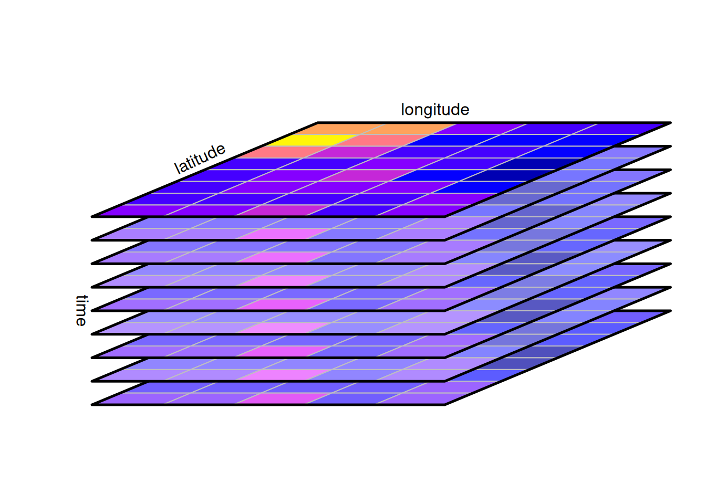
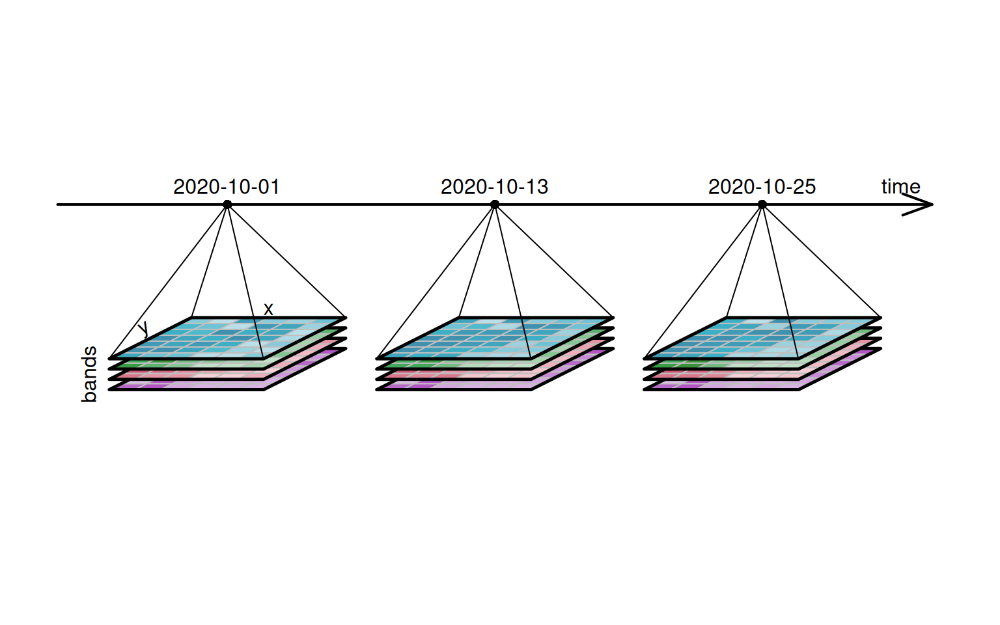
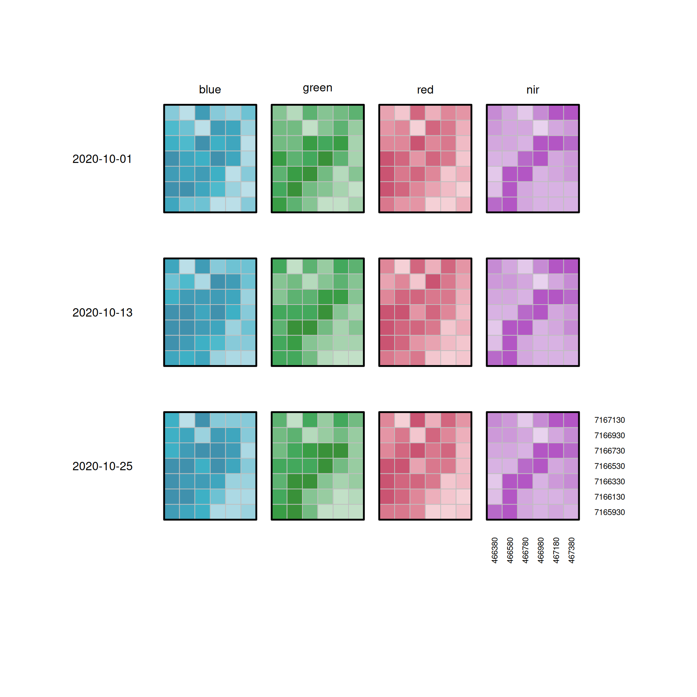
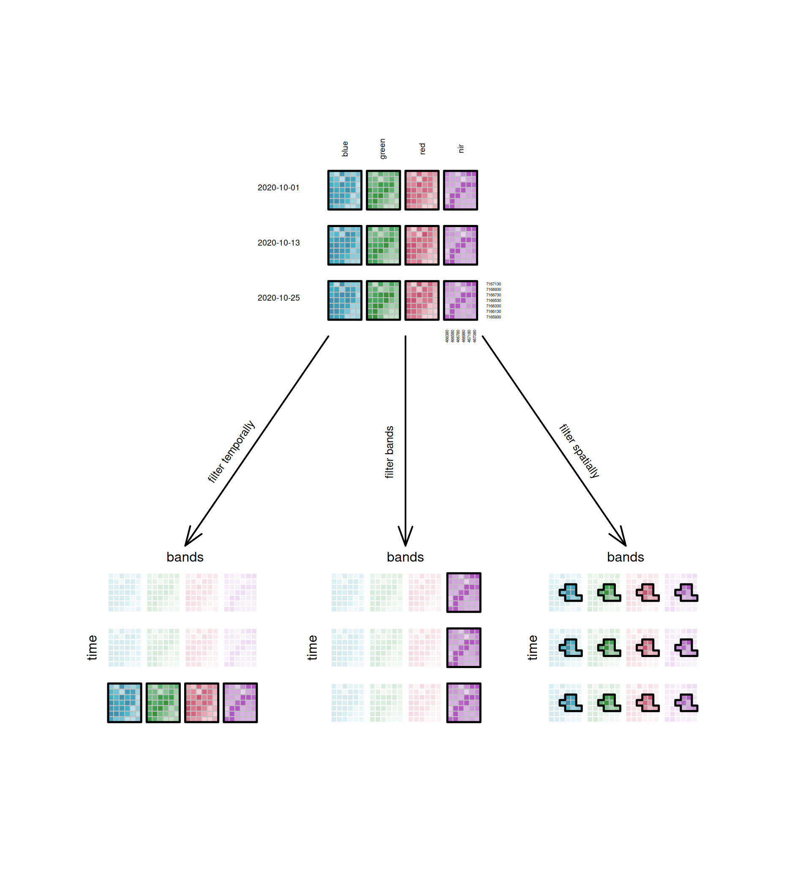
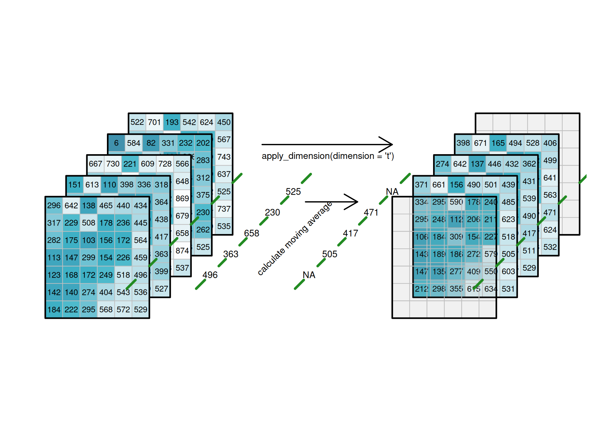
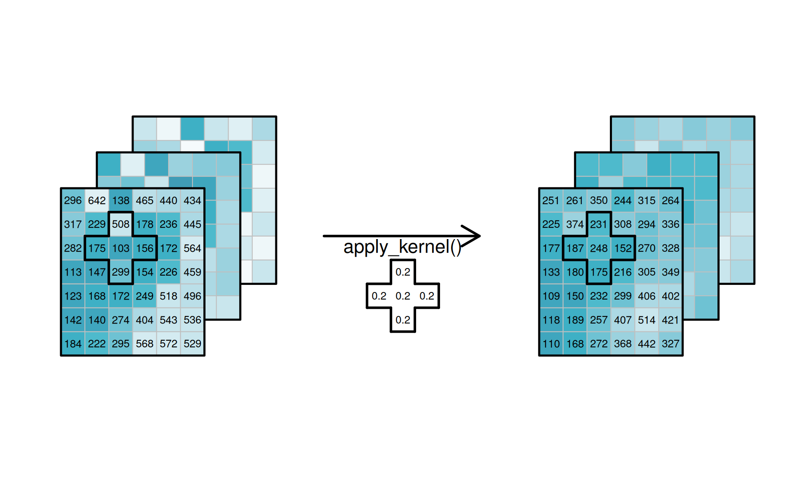
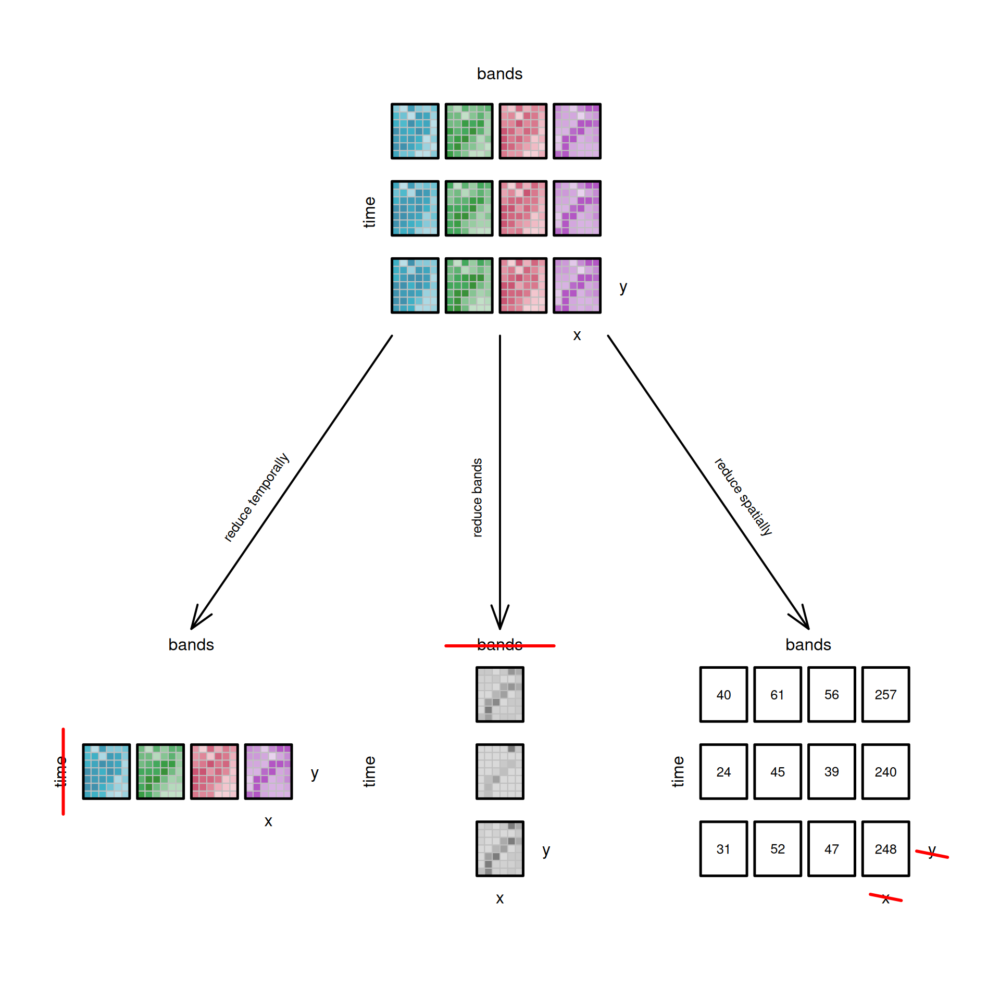
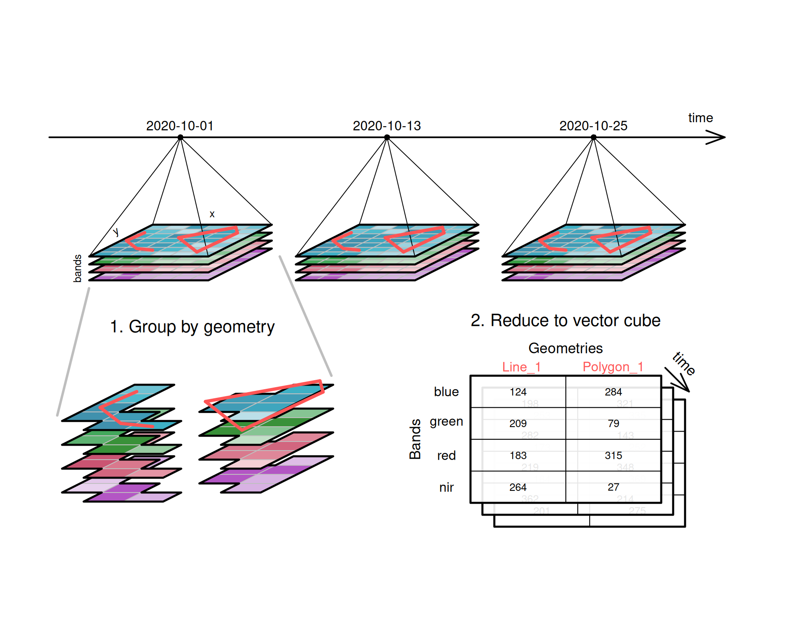
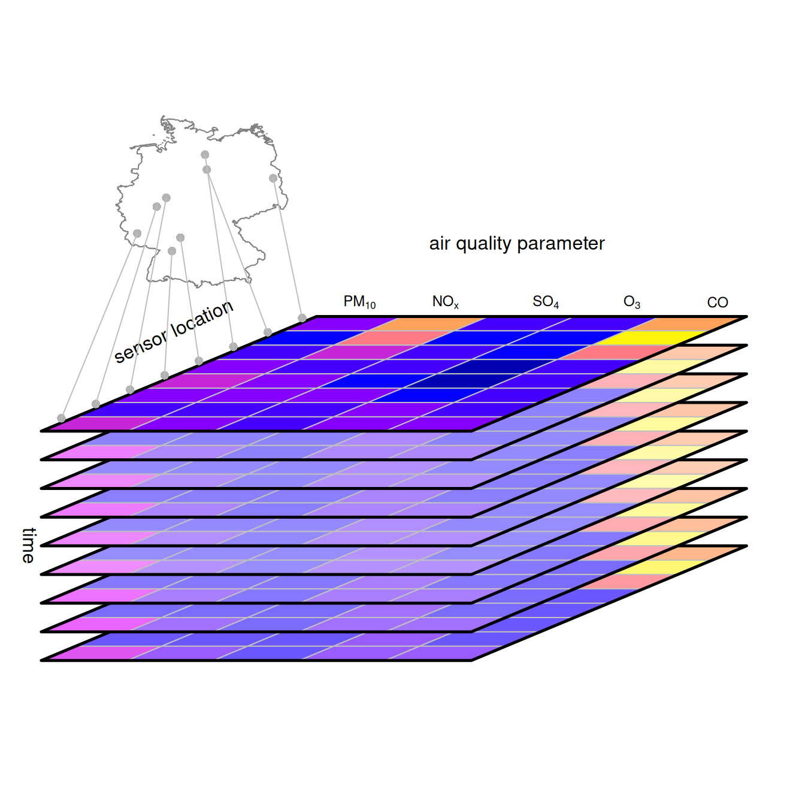

Data cubes arise naturally when we observe properties of a set of geometries repeatedly over time. Time information may sometimes be considered as an attribute of a feature, such as when we register the year of construction of a building or the date of birth of a person (Chapter 5). In other cases it may refer to the time of observing an attribute, or the time for which a prediction of an attribute has been made. In these cases, time is on equal footing with space, and time and space together describe the physical dimensions over which we observe, model, predict, or make forecasts for.
One way of considering our world is that of a four-dimensional space, with three space dimensions and one time dimension. In that view, events become “things” or “objects” that have as duration their size on the time dimension (Galton 2004). Although such a view does not align well with how we experience and describe the world, from a data analytical perspective, four numbers, along with their reference systems, suffice to describe space and time coordinates of an observation associated with a point location and time instance.
We define data cubes as array data with one or more array dimensions associated with space and/or time (Lu, Appel, and Pebesma 2018). This implies that raster data, features with attributes, and time series data are all special cases of data cubes. Since we do not restrict to three-dimensional structures, we actually mean hypercubes rather than cubes, and as the cube extent of the different dimensions does not have to be identical, or have comparable units, the better term would be hyper-rectangle. For simplicity, we talk about data cubes instead.
A canonical form of a data cube is shown in Figure 6.1: it shows in a perspective plot a set of raster layers for the same region that were collected (observed, or modelled) at different time steps. The three cube dimensions longitude, latitude, and time, are thought of as being orthogonal. Arbitrary two-dimensional cube slices are obtained by fixing one of the dimensions at a particular value, one-dimensional slices are obtained by fixing two of the dimensions at a particular value, and a scalar is obtained by fixing three dimensions at a particular value.
Code
# (C) 2019, Edzer Pebesma, CC-BY-SAset.seed(1331)library(stars) |>suppressPackageStartupMessages()library(colorspace)tif <-system.file("tif/L7_ETMs.tif", package ="stars")r <-read_stars(tif)nrow <-5ncol <-8m <- r[[1]][1:nrow,1:ncol,1]dim(m) <-c(x = nrow, y = ncol) # named dims <-st_as_stars(m)# sattr(s, "dimensions")[[1]]$delta =3attr(s, "dimensions")[[2]]$delta =-.5attr(attr(s, "dimensions"), "raster")$affine =c(-1.2, 0.0)plt <-function(x, yoffset =0, add, li =TRUE) {attr(x, "dimensions")[[2]]$offset =attr(x, "dimensions")[[2]]$offset + yoffset l <-st_as_sf(x, as_points =FALSE) pal <-sf.colors(10)if (li) pal <-lighten(pal, 0.3+rnorm(1, 0, 0.1))if (! add)plot(l, axes =FALSE, breaks ="equal", pal = pal, reset =FALSE, border =grey(.75), key.pos =NULL, main =NULL, xlab ="time")elseplot(l, axes =TRUE, breaks ="equal", pal = pal, add =TRUE, border =grey(.75)) u <-st_union(l)# print(u)plot(st_geometry(u), add =TRUE, col =NA, border ='black', lwd =2.5)}pl <-function(s, x, y, add =TRUE, randomize =FALSE) {attr(s, "dimensions")[[1]]$offset = xattr(s, "dimensions")[[2]]$offset = y m <- r[[1]][y +1:nrow,x +1:ncol,1]if (randomize) m <- m[sample(y +1:nrow),x +1:ncol]dim(m) =c(x = nrow, y = ncol) # named dim s[[1]] = mplt(s, 0, add)plt(s, 1, TRUE)plt(s, 2, TRUE)plt(s, 3, TRUE)plt(s, 4, TRUE)plt(s, 5, TRUE)plt(s, 6, TRUE)plt(s, 7, TRUE)plt(s, 8, TRUE, FALSE)}plot.new()par(mar =rep(0.5,4))plot.window(xlim =c(-12,15), ylim =c(-5,10), asp=1)pl(s, 0, 0)# box()text(-10, 0, "time", srt =-90, col ='black')text(-5, 6.5, "latitude", srt =25, col ='black')text( 5, 8.5, "longitude", srt =0, col ='black')

Figure 6.1: Raster data cube with dimensions latitude, longitude, and time
6.1 A four-dimensional data cube
Code
# (C) 2021, Jonathan Bahlmann, CC-BY-SA# https://github.com/Open-EO/openeo.org/tree/master/documentation/1.0/datacubes/.scripts# based on work by Edzer Pebesma, 2019, here: https://gist.github.com/edzer/5f1b0faa3e93073784e01d5a4bb60eca# plotting runs via a dummy stars object with x, y dimensions (no bands)# to not be overly dependent on an input image, time steps and bands# are displayed by replacing the matrix contained in the dummy stars object# every time something is plotted# packages, read input ----set.seed(1331)library(stars)library(colorspace) |>suppressPackageStartupMessages()library(scales) |>suppressPackageStartupMessages()# make color palettes ----blues <-sequential_hcl(n =20, h1 =211, c1 =80, l1 =40, l2 =100, p1 =2)greens <-sequential_hcl(n =20, h1 =134, c1 =80, l1 =40, l2 =100, p1 =2)reds <-sequential_hcl(n =20, h1 =360, c1 =80, l1 =40, l2 =100, p1 =2)purples <-sequential_hcl(n =20, h1 =299, c1 =80, l1 =40, l2 =100, p1 =2)greys <-sequential_hcl(n =20, h1 =0, c1 =0, l1 =40, l2 =100, p1 =2)# matrices from raster ----# make input matrices from an actual raster imageinput <-read_stars("data/iceland_delta_cutout_2.tif") # this raster needs approx 6x7 format# if the input raster is changed, every image where a pixel value is written as text needs to be checked and corrected accordinglyinput <- input[,,,1:4]warped <-st_warp(input, crs =st_crs(input), cellsize =200) # warp to approx. 6x7 pixel# these are only needed for resamplingwarped_highres <-st_warp(warped, crs =st_crs(warped), cellsize =100) # with different input, cellsize must be adapted# this is a bit of a trick, because 3:4 is different format than 6:7# when downsampling, the raster of origin isn't so important anywaywarped_lowres <-st_warp(warped_highres[,1:11,,], crs =st_crs(warped), cellsize =390)# plot(warped_lowres)# image(warped[,,,1], text_values = TRUE)t1 <-floor(matrix(runif(42, -30, 150), ncol =7)) # create timesteps 2 and 3 randomlyt2 <-floor(matrix(runif(42, -250, 50), ncol =7))# create dummy stars object ----make_dummy_stars <-function(x, y, d1, d2, aff) { m = warped_highres[[1]][1:x,1:y,1] # underlying raster doesn't matter because it's just dummy constructdim(m) =c(x = x, y = y) # named dim dummy =st_as_stars(m)attr(dummy, "dimensions")[[1]]$delta = d1attr(dummy, "dimensions")[[2]]$delta = d2attr(attr(dummy, "dimensions"), "raster")$affine =c(aff, 0.0)return(dummy)}s <-make_dummy_stars(6, 7, 2.5, -.5714286, -1.14) # mainly used, perspectivef <-make_dummy_stars(6, 7, 1, 1, 0) # flathighres <-make_dummy_stars(12, 14, 1.25, -.2857143, -.57) # for resamplinglowres <-make_dummy_stars(3, 4, 5, -1, -2) # for resampling# matrices from image ----make_matrix <-function(image, band, n =42, ncol =7, t =0) {# this is based on an input image with >= 4 input bands# n is meant to cut off NAs, ncol is y, t is random matrix for time differencereturn(matrix(image[,,,band][[1]][1:n], ncol = ncol) - t)# before: b3 <- matrix(warped[,,,1][[1]][1:42], ncol = 7) - t2}# now use function: b1 <-make_matrix(warped, 1)b2 <-make_matrix(warped, 1, t = t1)b3 <-make_matrix(warped, 1, t = t2)g1 <-make_matrix(warped, 2)g2 <-make_matrix(warped, 2, t = t1)g3 <-make_matrix(warped, 2, t = t2)r1 <-make_matrix(warped, 3)r2 <-make_matrix(warped, 3, t = t1)r3 <-make_matrix(warped, 3, t = t2)n1 <-make_matrix(warped, 4)n2 <-make_matrix(warped, 4, t = t1)n3 <-make_matrix(warped, 4, t = t2)# plot functions ----plt <-function(x, yoffset =0, add, li =TRUE, pal, print_geom =TRUE, border = .75, breaks ="equal") {# pal is color paletteattr(x, "dimensions")[[2]]$offset =attr(x, "dimensions")[[2]]$offset + yoffset l =st_as_sf(x, as_points =FALSE)if (li) pal <-lighten(pal, 0.2) # + rnorm(1, 0, 0.1))if (! add)plot(l, axes =FALSE, breaks = breaks, pal = pal, reset =FALSE, border =grey(border), key.pos =NULL, main =NULL, xlab ="time")elseplot(l, axes =TRUE, breaks = breaks, pal = pal, add =TRUE, border =grey(border)) u <-st_union(l)# print(u)if(print_geom) {plot(st_geometry(u), add =TRUE, col =NA, border ='black', lwd =2.5) } else {# not print geometry }}pl_stack <-function(s, x, y, add =TRUE, nrM, imgY =7, inner =1) {# nrM is the timestep {1, 2, 3}, cause this function# prints all 4 bands at onceattr(s, "dimensions")[[1]]$offset = xattr(s, "dimensions")[[2]]$offset = y# m <- r[[1]][y + 1:nrow,x + 1:ncol,1] m <-eval(parse(text=paste0("n", nrM))) s[[1]] <- m[,c(imgY:1)] # turn around to have same orientation as flat plotplt(s, 0, TRUE, pal = purples) m <-eval(parse(text=paste0("r", nrM))) s[[1]] <- m[,c(imgY:1)]plt(s, 1*inner, TRUE, pal = reds) m <-eval(parse(text=paste0("g", nrM))) s[[1]] <- m[,c(imgY:1)]plt(s, 2*inner, TRUE, pal = greens) m <-eval(parse(text=paste0("b", nrM))) s[[1]] <- m[,c(imgY:1)]plt(s, 3*inner, TRUE, pal = blues) # li FALSE deleted}# flat plot function# prints any dummy stars with any single matrix to positionpl <-function(s, x, y, add =TRUE, randomize =FALSE, pal, m, print_geom =TRUE, border = .75, breaks ="equal") {# m is matrix to replace image with# m <- t(m)attr(s, "dimensions")[[1]]$offset = xattr(s, "dimensions")[[2]]$offset = y# print(m) s[[1]] <- mplt(s, 0, add =TRUE, pal = pal, print_geom = print_geom, border = border, breaks = breaks)#plot(s, text_values = TRUE)}print_segments <-function(x, y, seg, by =1, lwd =4, col ="black") { seg <- seg * by seg[,1] <- seg[,1] + x seg[,3] <- seg[,3] + x seg[,2] <- seg[,2] + y seg[,4] <- seg[,4] + ysegments(seg[,1], seg[,2], seg[,3], seg[,4], lwd = lwd, col = col)}# time series ----# from: cube1_ts_6x7_bigger.pngoffset =26plot.new()#par(mar = c(3, 2, 7, 2))par(mar =c(0, 0, 0, 0))#plot.window(xlim = c(10, 50), ylim = c(-3, 10), asp = 1)plot.window(xlim =c(-15, 75), ylim =c(-3, 10), asp =1)pl_stack(s, 0, 0, nrM =3)pl_stack(s, offset, 0, nrM =2)pl_stack(s, 2* offset, 0, nrM =1)# po <- matrix(c(0,-8,7,0,15,3.5, 0,1,1,5,5,14), ncol = 2)heads <-matrix(c(3.5, 3.5+ offset, 3.5+2*offset, 14,14,14), ncol =2)points(heads, pch =16) # 4 or 16segments(c(-8, 7, 0, 15), c(-1,-1,3,3), 3.5, 14) # first stack pyramidsegments(c(-8, 7, 0, 15) + offset, c(-1,-1,3,3), 3.5+ offset, 14) # second stack pyramidsegments(c(-8, 7, 0, 15) +2*offset, c(-1,-1,3,3), 3.5+2*offset, 14) # third stack pyramidarrows(-13, 14, 72, 14, angle =20, lwd =2) # timelinetext(7.5, 3.8, "x", col ="black")text(-10, -2.5, "bands", srt =90, col ="black")text(-4.5, 1.8, "y", srt =27.5, col ="black")y <-15.8text(69, y, "time", col ="black")text(3.5, y, "2020-10-01", col ="black")text(3.5+ offset, y, "2020-10-13", col ="black")text(3.5+2*offset, y, "2020-10-25", col ="black")

Figure 6.2: Four-dimensional raster data cube with dimensions x, y, bands, and time
Figure 6.2 depicts a four-dimensional raster data cube (Appel and Pebesma 2019), where three-dimensional raster data cubes with a spectral dimension (“bands”) are organised along a fourth dimension, a time axis. Colour image data always has three bands (blue, green, red), and this example has a fourth band (near infrared, NIR), which is commonly found in spectral remote sensing data.
Figure 6.3 shows exactly the same data, but layed out flat as a facet plot (or scatterplot matrix), where two dimensions (\(x\) and \(y\)) are aligned with (or nested within) the dimensions bands and time, respectively.
Code
# flat ----xlabels <-seq(attr(warped, "dimensions")[[1]]$offset +attr(warped, "dimensions")[[1]]$delta /2, length.out =attr(warped, "dimensions")[[1]]$to, by =attr(warped, "dimensions")[[1]]$delta)ylabels <-seq(attr(warped, "dimensions")[[2]]$offset +attr(warped, "dimensions")[[2]]$delta /2, length.out =attr(warped, "dimensions")[[2]]$to, by =attr(warped, "dimensions")[[2]]$delta)print_labels <-function(x, y, off, lab, horizontal, cex =1) {if(horizontal) { # xfor(i in0:(length(lab)-1)) {text(x + i*off, y, lab[i+1], cex = cex, srt =90) } } else { # y lab <- lab[length(lab):0]for(i in0:(length(lab)-1)) {text(x, y + i*off, lab[i+1], cex = cex) } }}# before: width=1000, xlim(-2, 33), date labels x=31plot.new()# par(mar = c(0,0,0,0))par(mar =c(3,0,0,0))plot.window(xlim =c(-2, 40), ylim =c(0, 25), asp =1)pl(f, 7, 0, pal = blues, m = b1)pl(f, 7, 10, pal = blues, m = b2)pl(f, 7, 20, pal = blues, m = b3)pl(f, 14, 0, pal = greens, m = g1)pl(f, 14, 10, pal = greens, m = g2)pl(f, 14, 20, pal = greens, m = g3)pl(f, 21, 0, pal = reds, m = r1)pl(f, 21, 10, pal = reds, m = r2)pl(f, 21, 20, pal = reds, m = r3)pl(f, 28, 0, pal = purples, m = n1)pl(f, 28, 10, pal = purples, m = n2)pl(f, 28, 20, pal = purples, m = n3)print_labels(28.5, -2, 1, xlabels, horizontal =TRUE, cex =0.7)print_labels(36, 0.5, 1, ylabels, horizontal =FALSE, cex =0.7)# arrows(6, 27, 6, 0, angle = 20, lwd = 2)# text(5, 14, "time", srt = 90, col = "black")text(10, 28, "blue", col ="black")text(17, 28, "green", col ="black")text(24, 28, "red", col ="black")text(31, 28, "nir", col ="black")text(3, 23.5, "2020-10-01", col ="black")text(3, 13.5, "2020-10-13", col ="black")text(3, 3.5, "2020-10-25", col ="black")

Figure 6.3: Four-dimensional raster data cube layed out flat over two dimensions
6.2 Dimensions, attributes, and support
Phenomena in space and time can be thought of as functions with domain space and time, and with range one or more observed attributes. For clearly identifiable discrete events or objects, the range is typically discrete, and precise delineation involves describing the precise coordinates where a thing starts or stops, which is best suited by vector geometries. For continuous phenomena, variables that take on a value everywhere such as air temperature or land use type, there are infinitely many values to represent and a common approach is to discretise space and time regularly over the spatiotemporal domain (extent) of interest. This leads to a number of familiar data structures:
time series, depicted as time lines for functions of time
image or raster data for two-dimensional spatial data
time sequences of images for dynamic spatial data
The third form of this, where a variable \(Z\) depends on \(x\), \(y\) and \(t\), as in
\[Z = f(x, y, t)\]
is the archetype of a spatiotemporal array or data cube: the shape of the volume where points regularly discretising the domain forms a cube. We call the variables that form the range (here: \(x, y, t\)) the cube dimensions. Data cubes may have multiple attributes, as in
\[\{Z_1,Z_2,...,Z_p\} = f(x, y, t)\]
and if \(Z\) is functional, for instance reflectance values measured over the electromagnetic spectrum, the spectral wavelengths \(\lambda\) may form an additional dimension, as in \(Z = f(x,y,t,\lambda)\). Section 6.5 discusses the alternative of representing colour bands as attributes.
Multiple time dimensions arise for instance when making forecasts for different times in the future \(t'\) at different times \(t\), or when time is split over multiple dimensions (as in year, day-of-year, and hour-of-day). The most general definition of a data cube is a functional mapping from \(n\) dimensions to \(p\) attributes:
\[\{Z_1,Z_2,...,Z_p\} = f(D_1,D_2,...,D_n)\]
Here, we will consider any dataset with one or more space dimensions and zero or more time dimensions as data cubes. That includes:
Data cubes are usually stored in multi-dimensional arrays, and the usual relationship between 1-based array index \(i\) and an associated regularly discretised dimension variable \(x\) is
\[x = o_x + (i-1) d_x\]
with \(o_x\) the origin, and \(d_x\) the grid spacing for this dimension.
For more general cases like those in Figures -Figure 1.6 b-c, the relation between \(x\) and \(y\) and array indexes \(i\) and \(j\) is
\[x = o_x + (i-1) d_x + (j-1) a_1\]
\[y = o_y + (i-1) a_2 + (j-1) d_y\]
With two affine parameters \(a_1\) and \(a_2\); this is the so-called geotransform as used in GDAL. When \(a_1=a_2=0\), this reduces to the regular raster of Figure 1.6 a with square cells if \(d_x = d_y\). For integer indexes, the coordinates are that of the starting edge of a grid cell, and the cell area (pixel) spans a range corresponding to index values ranging from \(i\) (inclusive) to \(i+1\) (exclusive). For most common imagery formats, \(d_y\) is negative, indicating that image row index increases with decreasing \(y\) values (southward). To get the \(x\)- and \(y\)-coordinate of the grid cell centre of the top left grid cell (in case of a negative \(d_y\)), we use \(i=1.5\) and \(j=1.5\).
For rectilinear rasters, a table that maps array index to dimension values is needed. NetCDF files for instance always store all values of spatial dimension (coordinate) variables that may correspond to the centre or offset of spatial grid cells, and in addition may store grid cell boundaries (to define rectilinear dimensions or to disambiguate the relation of the coordinate variable values to the cell boundaries).
For curvilinear rasters, an array that maps every combination of \(i,j\) into \(x,y\) pairs is needed, or a parametric function that does this (a projection or its inverse). NetCDF files often provide both, when available. GDAL calls such arrays geolocation arrays, and has extensive support for transformations involving them.
Support along cube dimensions
Section 5.1 defined spatial support of an attribute variable as the size (length, area, volume) of a geometry associated with a particular observation or prediction. The same notion applies to temporal support. Although time is rarely reported by explicit time periods having a start- and end-time, in many cases either the time stamp implies a period (ISO-8601 uses “2021” for the full year, “2021-01” for the full month) or the time period is taken as the period from the time stamp of the current record up to but not including the time stamp of the next record.
An example is MODIS satellite imagery, where vegetation indexes (NDVI and EVI) are available as 16-day composites, meaning that over 16-day periods all available imagery is aggregated into a single image; such composites have temporal “block support”. Sentinel-2 or Landsat-8 data on the other hand are “snapshot” images and have temporal “point support”. When temporally aggregating data with temporal point support, for instance to monthly values, all images falling in the target time interval are selected. When aggregating temporal block support imagery such as the MODIS 16-day composite, one might weigh images according to the amount of overlap of the 16-day composite period and the target period, similar to area-weighted interpolation Section 5.3 but over the time dimension.
6.3 Operations on data cubes
Slicing a cube: filter
Data cubes can be sliced into sub-cubes by fixing a dimension at a particular value. Figure 6.4 shows the sub-cubes obtained by doing this with the temporal, spectral, or spatial dimension. In this figure, the spatial filtering does not happen by fixing a single spatial dimension at a particular value, but by selecting a particular sub-region, which is a more common operation. Fixing \(x\) or \(y\) would give a sub-cube along a transect of constant \(x\) or \(y\), which can be used to show a Hovmöller diagram, where an attribute is plotted (coloured) in the space of one space and one time dimension.
Code
# filter ----# mask <- matrix(c(rep(NA, 26), 1,NA,1,NA,1,1,1, rep(NA, 9)), ncol = 7)mask <-matrix(c(NA,NA,NA,NA,NA,NA,NA,NA,NA,NA,NA,NA,NA,NA,NA, 1, 1, 1,NA,NA, 1, 1, 1,NA,NA,NA,NA, 1, 1,NA,NA,NA,NA,NA,NA,NA,NA,NA,NA,NA,NA,NA), ncol =7)print_grid <-function(x, y) {pl(f, 0+x, 0+y, pal = blues, m = b1)pl(f, 0+x, 10+y, pal = blues, m = b2)pl(f, 0+x, 20+y, pal = blues, m = b3)pl(f, 7+x, 0+y, pal = greens, m = g1)pl(f, 7+x, 10+y, pal = greens, m = g2)pl(f, 7+x, 20+y, pal = greens, m = g3)pl(f, 14+x, 0+y, pal = reds, m = r1)pl(f, 14+x, 10+y, pal = reds, m = r2)pl(f, 14+x, 20+y, pal = reds, m = r3)pl(f, 21+x, 0+y, pal = purples, m = n1)pl(f, 21+x, 10+y, pal = purples, m = n2)pl(f, 21+x, 20+y, pal = purples, m = n3)}print_alpha_grid <-function(x,y, alp =0.2, geom =FALSE) {pl(f, 0+x, 0+y, pal =alpha(blues, alp), print_geom = geom, m = b1, border =1)pl(f, 0+x, 10+y, pal =alpha(blues, alp), print_geom = geom, m = b2, border =1)pl(f, 0+x, 20+y, pal =alpha(blues, alp), print_geom = geom, m = b3, border =1)pl(f, 7+x, 0+y, pal =alpha(greens, alp), print_geom = geom, m = g1, border =1)pl(f, 7+x, 10+y, pal =alpha(greens, alp), print_geom = geom, m = g2, border =1)pl(f, 7+x, 20+y, pal =alpha(greens, alp), print_geom = geom, m = g3, border =1)pl(f, 14+x, 0+y, pal =alpha(reds, alp), print_geom = geom, m = r1, border =1)pl(f, 14+x, 10+y, pal =alpha(reds, alp), print_geom = geom, m = r2, border =1)pl(f, 14+x, 20+y, pal =alpha(reds, alp), print_geom = geom, m = r3, border =1)pl(f, 21+x, 0+y, pal =alpha(purples, alp), print_geom = geom, m = n1, border =1)pl(f, 21+x, 10+y, pal =alpha(purples, alp), print_geom = geom, m = n2, border =1)invisible(pl(f, 21+x, 20+y, pal =alpha(purples, alp), print_geom = geom, m = n3, border =1))}print_grid_filter <-function(x, y) {pl(f, 0+x, 0+y, pal = blues, m =matrix(b1[mask ==TRUE], ncol =7))pl(f, 0+x, 10+y, pal = blues, m =matrix(b2[mask ==TRUE], ncol =7))pl(f, 0+x, 20+y, pal = blues, m =matrix(b3[mask ==TRUE], ncol =7))pl(f, 7+x, 0+y, pal = greens, m =matrix(g1[mask ==TRUE], ncol =7))pl(f, 7+x, 10+y, pal = greens, m =matrix(g2[mask ==TRUE], ncol =7))pl(f, 7+x, 20+y, pal = greens, m =matrix(g3[mask ==TRUE], ncol =7))pl(f, 14+x, 0+y, pal = reds, m =matrix(r1[mask ==TRUE], ncol =7))pl(f, 14+x, 10+y, pal = reds, m =matrix(r2[mask ==TRUE], ncol =7))pl(f, 14+x, 20+y, pal = reds, m =matrix(r3[mask ==TRUE], ncol =7))pl(f, 21+x, 0+y, pal = purples, m =matrix(n1[mask ==TRUE], ncol =7))pl(f, 21+x, 10+y, pal = purples, m =matrix(n2[mask ==TRUE], ncol =7))pl(f, 21+x, 20+y, pal = purples, m =matrix(n3[mask ==TRUE], ncol =7))}print_grid_time_filter <-function(x, y) { # 3x1, 28x7pl(f, 0+x, 10+y, pal = blues, m = b3)pl(f, 7+x, 10+y, pal = greens, m = g3)pl(f, 14+x, 10+y, pal = reds, m = r3)pl(f, 21+x, 10+y, pal = purples, m = n3)}print_grid_bands_filter <-function(x, y, pal = greys) { # 1x3 6x27pl(f, 0+x, 0+y, pal = pal, m = n1)pl(f, 0+x, 10+y, pal = pal, m = n2)pl(f, 0+x, 20+y, pal = pal, m = n3)}# build exactly like reduceplot.new()par(mar =c(3,3,3,3))x <-120y <-100down <-0plot.window(xlim =c(0, x), ylim =c(0, y), asp =1)print_grid(x/2-28/2,y-27)print_alpha_grid((x/3-28)/2, 0-down) # alpha gridprint_grid_time_filter((x/3-28)/2, -10-down) # select 3rdprint_alpha_grid(x/3+((x/3-6)/2) -10.5, 0-down) # alpha gridprint_grid_bands_filter(x/3+((x/3-12.4)), 0-down, pal = purples)print_alpha_grid(2*(x/3)+((x/3-28)/2), 0-down) # alpha gridprint_grid_filter(2*(x/3)+((x/3-28)/2), 0-down)text(3, 13.5-down, "time", srt =90, col ="black")text(43, 13.5-down, "time", srt =90, col ="black")text(83, 13.5-down, "time", srt =90, col ="black")text(20, 30, "bands", col ="black")text(60, 30, "bands", col ="black")text(100, 30, "bands", col ="black")arrows(x/2-28/2,y-30, x/6,32, angle =20, lwd =2)arrows(x/2,y-30, x/2,32, angle =20, lwd =2)arrows(x/2+28/2,y-30, 100, 32, angle =20, lwd =2)# points(seq(1,120,10), seq(1,120,10))text(28.5,49, "filter temporally", srt =55.5, col ="black", cex =0.8)text(57,49, "filter bands", srt =90, col ="black", cex =0.8)text(91.5,49, "filter spatially", srt =-55.5, col ="black", cex =0.8)print_labels(x = x/2-28/2+3, y = y+4, off =7, lab =c("blue", "green", "red", "nir"),horizontal =TRUE, cex =0.6)print_labels(x = x/2-28/2-9, y = y-23, off =10, lab =c("2020-10-01", "2020-10-13", "2020-10-25"),horizontal =FALSE, cex =0.6)print_labels(x = x/2-28/2+21.5, y = y-30, off =1, lab = xlabels,horizontal =TRUE, cex =0.3)print_labels(x = x/2-28/2+30, y = y-26.5, off =1, lab = ylabels,horizontal =FALSE, cex =0.3)

Figure 6.4: Data cube filtering by time, band or spatially
Applying functions to dimensions
A common analysis involves applying a function over one or more cube dimensions. Simple cases arise where a function such as abs, sin, or sqrt is applied to all values in the cube, or when a function takes all values in the cube and returns a single scalar, such as when computing the mean or maximum value over the entire cube. Other options include applying the function to selected dimensions, such as applying a temporal low-pass filter to every individual (pixel/band) time series as shown in Figure 6.5, or applying a spatial low-pass filter to every spatial slice for every band/time combination, shown in Figure 6.6.
Code
print_text =function(s, x, y, m) {# m <- t(m) # transverse for correct order# print(m) r <-rep(seq(0.5, 5.5, 1), 7) r <- r + x # consider offsets u <-c(rep(0.5, 6), rep(1.5, 6), rep(2.5, 6), rep(3.5, 6), rep(4.5, 6), rep(5.5, 6), rep(6.5, 6)) u <- u + y # offset tab <-matrix(c(r,u), nrow =42, byrow =FALSE) # make point tablefor (i in1:42) {#text(tab[i, 1], tab[i, 2], labels = paste0("", m[i]), cex = 1.1)text(tab[i, 1], tab[i, 2], labels =paste0("", m[i]), cex =0.8) }}time_arrow_seg <-matrix(c(c(-1.0, 0.3, 1.5, 2.7, 3.9, 5.1), c(-1.0, 0.3, 1.5, 2.7, 3.9, 5.1),c(-0.5, 0.7, 1.9, 3.1, 4.3, 5.6), c(-0.5, 0.7, 1.9, 3.1, 4.3, 5.6)), ncol =4)time_arrow_flag_seg <-matrix(c(c(-1.0, 1.5, 2.7, 3.9), c(-1.0, 1.5, 2.7, 3.9),c(0.7, 1.9, 3.1, 5.6), c(0.7, 1.9, 3.1, 5.6)), ncol =4)b11 <- b2 - t1b12 <- b1 - t2 + t1brks <-seq(0, 1000, 50)# png("exp_apply_ts.png", width = 2400, height = 1000, pointsize = 24)plot.new()par(mar =c(2,2,2,2))x <-30y <-10# 7.5plot.window(xlim =c(0, x), ylim =c(0, y), asp =1)pl(f, 4.8, 3.8, pal = blues, m = b3, breaks = brks)print_text(s, 4.8, 3.8, m = b3)pl(f, 3.6, 2.6, pal = blues, m = b11, breaks = brks)print_text(s, 3.6, 2.6, m = b11)pl(f, 2.4, 1.4, pal = blues, m = b12, breaks = brks)print_text(s, 2.4, 1.4, m = b12)pl(f, 1.2, .2, pal = blues, m = b2, breaks = brks)print_text(s, 1.2, .2, m = b2)pl(f, 0, -1, pal = blues, m = b1, breaks = brks)print_text(s, 0, -1, m = b1) # print text on left first stackpl(f, 24.8, 3.8, pal =alpha(greys, 0.1), m =matrix(rep("NA", 42), ncol =7))pl(f, 23.6, 2.6, pal = blues, m = (b12 + b11 + b3) /3, breaks = brks)print_text(s, 23.6, 2.6, m =floor((b12 + b11 + b3) /3))pl(f, 22.4, 1.4, pal = blues, m = (b2 + b12 + b11) /3, breaks = brks)print_text(s, 22.4, 1.4, m =floor((b2 + b12 + b11) /3))pl(f, 21.2, .2, pal = blues, m = (b1 + b2 + b12) /3, breaks = brks)print_text(s, 21.2, .2, m =floor((b1 + b2 + b12) /3))pl(f, 20, -1, pal =alpha(greys, 0.1), m =matrix(rep("NA", 42), ncol =7))print_segments(5.7, 1.7, seg = time_arrow_seg, col ="forestgreen")arrows(12.5, 9, 20, 9, lwd =2)cex <- .9text(16.3, 8.3, "apply_dimension(dimension = 't')", cex = cex)print_segments(9.7, 1.7, time_arrow_seg, col ="forestgreen") # draw ma explanationtext(-0.5+10, -0.5+2, "496", cex = cex)text(.7+10, .7+2, "363", cex = cex)text(1.9+10, 1.9+2, "658", cex = cex)text(3.1+10, 3.1+2, "230", cex = cex)text(4.3+10, 4.3+2, "525", cex = cex)t_formula <-expression("t"[n]*" = (t"[n-1]*" + t"[n]*" + t"[n+1]*") / 3")# text(13.8, 3, t_formula, srt = 45, cex = 1.2)text(14.4, 3.6, "calculate moving average", srt =45, cex = cex)arrows(15, 5.7, 18, 5.7, lwd =2)print_segments(15.4, 1.7, seg = time_arrow_seg, col ="forestgreen") # draw ma explanationtext(-0.5+15.7, -0.5+2, "NA", cex = cex)text(.7+15.7, .7+2, "505", cex = cex)text(1.9+15.7, 1.9+2, "417", cex = cex)text(3.1+15.7, 3.1+2, "471", cex = cex)text(4.3+15.7, 4.3+2, "NA", cex = cex)print_segments(25.7, 1.7, seg = time_arrow_seg, col ="forestgreen")

Figure 6.5: Low-pass filtering of time series
Code
# apply ----abs_brks <-seq(-500,500, 50)abs_pal <-sequential_hcl(n =20, h1 =211, c1 =80, l1 =30, l2 =100, p1 =1.2)vNeumann_seg <-matrix(c(c(0,0,1,1,2,2,1,1,0,0,-1,-1), c(0,-1,-1,0,0,1,1,2,2,1,1,0), c(0,1,1,2,2,1,1,0,0,-1,-1,0), c(-1,-1,0,0,1,1,2,2,1,1,0,0)), ncol =4)apply_filter <-function(input, pad =TRUE, padValue =1) { ras <- raster::focal(raster::raster(input), w =matrix(c(0,0.2,0, 0.2,0.2,0.2, 0,0.2,0), ncol =3), pad = pad, padValue = padValue) ras <- raster::as.matrix(ras) ras[ras =="NaN"] <--999return(floor(ras))}brks <-seq(0, 1000, 50)plot.new()par(mar =c(0,2,0,0))x =30y =7.5plot.window(xlim =c(0, x), ylim =c(0, y), asp =1)pl(f, 3, 2, pal = blues, m = b3, breaks = brks)pl(f, 1.5, .5, pal = blues, m = b2, breaks = brks)pl(f, 0, -1, pal = blues, m = b1, breaks = brks)print_text(s, 0, -1, m = b1) # print text on left first stackprint_segments(2, 3, seg = vNeumann_seg, lwd =3)pl(f, 23, 2, pal = blues, m =apply_filter(b3), breaks = brks)pl(f, 21.5, 0.5, pal = blues, m =apply_filter(b2), breaks = brks)pl(f, 20, -1, pal = blues, m =apply_filter(b1), breaks = brks)print_text(s, 20, -1, m =apply_filter(b1)) # set pad = FALSE for -99print_segments(22, 3, seg = vNeumann_seg, lwd =3)arrows(11, 4, 17.5, 4, lwd =3)text(14.3, 3.5, "apply_kernel()", cex =1.4)print_segments(13.8, 1, seg = vNeumann_seg, lwd =3)cex = .8text(14.3, 1.5, "0.2", cex = cex)text(13.3, 1.5, "0.2", cex = cex)text(15.3, 1.5, "0.2", cex = cex)text(14.3, 2.5, "0.2", cex = cex)text(14.3, .5, "0.2", cex = cex)

Figure 6.6: Low pass filtering of spatial slices
Reducing dimensions
When applying function mean to an entire data cube, all dimensions vanish: the resulting “data cube” has dimensionality zero. We can also apply functions to a limited set of dimensions such that selected dimensions vanish, or are reduced. We already saw that filtering is a special case of this, but more in general we could for instance compute the maximum of every time series, the mean over every spatial slice, or a band index such as NDVI that summarises different spectral values into a single new “band” with the index value. Figure 6.7 illustrates these options.
Code
# reduce ----# calc mean over timetimeB <- (b1 + b2 + b3) /3timeG <- (g1 + g2 + g3) /3timeR <- (r1 + r2 + r3) /3timeN <- (n1 + n2 + n3) /3print_grid_time <-function(x, y) { # 3x1, 28x7pl(f, 0+x, 10+y, pal = blues, m = timeB)pl(f, 7+x, 10+y, pal = greens, m = timeG)pl(f, 14+x, 10+y, pal = reds, m = timeR)pl(f, 21+x, 10+y, pal = purples, m = timeN)}# calc ndvindvi1 <- (n1 - r1) / (n1 + r1)ndvi2 <- (n2 - r2) / (n2 + r2)ndvi3 <- (n3 - r3) / (n3 + r3)print_grid_bands <-function(x, y, pal = greys) { # 1x3 6x27pl(f, 0+x, 0+y, pal = pal, m = ndvi1)pl(f, 0+x, 10+y, pal = pal, m = ndvi2)pl(f, 0+x, 20+y, pal = pal, m = ndvi3)}plte =function(s, x, y, add =TRUE, randomize =FALSE, pal, m) {attr(s, "dimensions")[[1]]$offset = xattr(s, "dimensions")[[2]]$offset = y# m = r[[1]][y + 1:nrow,x + 1:ncol,1]# dim(m) = c(x = nrow, y = ncol) # named dim# s[[1]] = m# me <- floor(mean(s[[1]])) me <-floor(mean(m))if (me[1] >100) { # in case non-artificial grids with very high me <- m /10# numbers are used, make them smaller me <-floor(mean(me)) }text(x,y,me,cex =0.8)}print_grid_spat <-function(x, y) { x = x +3 y = y +3.5plte(s, 0+x, 0+y, pal = blues, m = b1)plte(s, 0+x, 10+y, pal = blues, m = b2)plte(s, 0+x, 20+y, pal = blues, m = b3)plte(s, 7+x, 0+y, pal = greens, m = g1)plte(s, 7+x, 10+y, pal = greens, m = g2)plte(s, 7+x, 20+y, pal = greens, m = g3)plte(s, 14+x, 0+y, pal = reds, m = r1)plte(s, 14+x, 10+y, pal = reds, m = r2)plte(s, 14+x, 20+y, pal = reds, m = r3)plte(s, 21+x, 0+y, pal = purples, m = n1)plte(s, 21+x, 10+y, pal = purples, m = n2)plte(s, 21+x, 20+y, pal = purples, m = n3)}# png("exp_reduce.png", width = 1200, height = 1000, pointsize = 32)plot.new()#par(mar = c(3,3,3,3))par(mar =c(3,0,2,0))x =120y =100plot.window(xlim =c(0, x), ylim =c(0, y), asp =1)print_grid(x/2-28/2,y-27)# print_alpha_grid((x/3-28)/2, 0) # alpha gridprint_grid_time((x/3-28)/2, 0) # off = 5.5# print_alpha_grid(x/3+((x/3-6)/2) -10.5, 0) # alpha gridprint_grid_bands(x/3+((x/3-6)/2), 0)print_alpha_grid(2*(x/3)+((x/3-28)/2), 0, alp =0, geom =TRUE) # alpha gridprint_grid_spat(2*(x/3)+((x/3-28)/2), 0)text(3, 13.5, "time", srt =90, col ="black")#segments(3.6, 8, 3.7, 19, col = "red", lwd=3)segments(3.4, 8, 3.4, 19, col ="red", lwd =3)text(43, 13.5, "time", srt =90, col ="black")text(83, 13.5, "time", srt =90, col ="black")text(20, 30, "bands", col ="black")text(60, 30, "bands", col ="black")segments(53,29.8, 67,29.8, col ="red", lwd =3)text(100, 30, "bands", col ="black")text(30, 7, "x", col ="black")text(36, 13, "y", col ="black")text(60, -3, "x", col ="black")text(66, 3, "y", col ="black")text(110, -3, "x", col ="black")text(116, 3, "y", col ="black")segments(108,-2.4, 112,-3.2, col ="red", lwd =3)segments(114,3.2, 118,2.4, col ="red", lwd =3)text(60, y+4, "bands", col ="black") # dim names on maintext(43, y-14, "time", srt =90, col ="black")text(x/2-28/2+24, y-30, "x", col ="black")text(x/2-28/2+30, y-24, "y", col ="black")arrows(x/2-28/2,y-30, x/6,32, angle =20, lwd =2)arrows(x/2,y-30, x/2,32, angle =20, lwd =2)arrows(x/2+28/2,y-30, 100, 32, angle =20, lwd =2)# points(seq(1,120,10), seq(1,120,10))text(28.5,49, "reduce temporally", srt =55.5, col ="black", cex =0.8)text(57,49, "reduce bands", srt =90, col ="black", cex =0.8)text(91.5,49, "reduce spatially", srt =-55.5, col ="black", cex =0.8)

Figure 6.7: Reducing data cube dimensions
6.4 Aggregating raster to vector cubes
Figure 6.8 illustrates how a four-dimensional raster data cube can be aggregated to a three-dimensional vector data cube. Pixels in the raster are grouped by spatial intersection with a set of vector geometries, and each group is then reduced to a single value by an aggregation function such as mean or max. In the example, the two spatial dimensions \(x\) and \(y\) reduce to a single dimension, the one-dimensional sequence of feature geometries, with geometries that are defined in the space of \(x\) and \(y\). Grouping geometries can also be POINT geometries, in which case the aggregation function is obsolete as single values at the POINT locations are extracted by querying a pixel value or by interpolating from the nearest pixels.
Code
# aggregate ----mask_agg <-matrix(c(NA,NA,NA,NA,NA,NA,NA, 1, 1,NA,NA,NA,1, 1,NA,NA, 1,NA,1,NA,NA, 1, 1,NA,1,NA,NA, 1, 1,NA,1,NA,NA,NA, 1,NA,NA,NA,NA,NA,NA,NA), ncol =7)pl_stack_agg <-function(s, x, y, add =TRUE, nrM, imgY =7, inner =1) {# pl_stack that masks the added matrices# nrM is the timestep {1, 2, 3}, cause this function# prints all 4 bands at onceattr(s, "dimensions")[[1]]$offset = xattr(s, "dimensions")[[2]]$offset = y# m = r[[1]][y + 1:nrow,x + 1:ncol,1] m <-eval(parse(text=paste0("n", nrM))) m <-matrix(m[mask_agg ==TRUE], ncol =7) s[[1]] = m[,c(imgY:1)] # turn around to have same orientation as flat plotplt(s, 0, TRUE, pal = purples) m <-eval(parse(text=paste0("r", nrM))) m <-matrix(m[mask_agg ==TRUE], ncol =7) s[[1]] = m[,c(imgY:1)]plt(s, 1*inner, TRUE, pal = reds) m <-eval(parse(text=paste0("g", nrM))) m <-matrix(m[mask_agg ==TRUE], ncol =7) s[[1]] = m[,c(imgY:1)]plt(s, 2*inner, TRUE, pal = greens) m <-eval(parse(text=paste0("b", nrM))) m <-matrix(m[mask_agg ==TRUE], ncol =7) s[[1]] = m[,c(imgY:1)]plt(s, 3*inner, TRUE, pal = blues) # li FALSE}polygon_1 <-matrix(c(c(0.0, 5.1, 4.9,-2.3), c(0.0, 2.4, 3.1, 1.8),c(5.1, 4.9,-2.3, 0.0), c(2.4, 3.1, 1.8, 0.0)), ncol =4)a <-make_dummy_stars(6, 7, 5, -1.14, -2.28)print_vector_content <-function(x, y, cex =0.8) { vec <-floor(rnorm(8, 250, 100))text( 0+ x,12+ y, vec[1], cex = cex)text( 0+ x, 8+ y, vec[2], cex = cex)text( 0+ x, 4+ y, vec[3], cex = cex)text( 0+ x, 0+ y, vec[4], cex = cex)text( 12+ x,12+ y, vec[5], cex = cex)text( 12+ x, 8+ y, vec[6], cex = cex)text( 12+ x, 4+ y, vec[7], cex = cex)text( 12+ x, 0+ y, vec[8], cex = cex)}print_ts <-function(off2, yoff2) {pl_stack(s, 0+ off2, yoff2, nrM =3) # input 2pl_stack(s, off + off2, yoff2, nrM =2)pl_stack(s, 2* off + off2, yoff2, nrM =1)arrows(-13+ off2, 14+ yoff2, 72+ off2, 14+ yoff2, angle =20, lwd =2) # timeline heads <-matrix(c(3.5+off2, 3.5+ off + off2, 3.5+2*off + off2, 14+yoff2,14+yoff2,14+yoff2), ncol =2)points(heads, pch =16) # 4 or 16segments(c(-8, 7, 0, 15)+off2, c(-1,-1,3,3)+yoff2, 3.5+off2, 14+yoff2) # first stack pyramidsegments(c(-8, 7, 0, 15) + off + off2, c(-1,-1,3,3)+yoff2, 3.5+ off + off2, 14+yoff2) # second stack pyramidsegments(c(-8, 7, 0, 15) +2*off + off2, c(-1,-1,3,3)+yoff2, 3.5+2*off + off2, 14+yoff2) # third stack pyramidtext(7.5+off2, 4.3+yoff2, "x", col ="black", cex = secText)text(-9.5+off2, -2.5+yoff2, "bands", srt =90, col ="black", cex = secText)text(-4.5+off2, 2+yoff2, "y", srt =27.5, col ="black", cex = secText)text(69+off2, 15.5+yoff2+1, "time", col ="black")text(3.5+off2, 15.5+yoff2, "2020-10-01", col ="black")text(3.5+ off + off2, 15.5+yoff2, "2020-10-13", col ="black")text(3.5+2*off + off2, 15.5+yoff2, "2020-10-25", col ="black")}secText <-0.8# secondary text size (dimension naming)off <-26# image stacks are always 26 apartx <-72# png Xy <-48# png Yyoff <-30plot.new()par(mar =c(5,3,3,3))plot.window(xlim =c(-5, x+4), ylim =c(-1, y), asp =1)print_ts(5, yoff)col <-'#ff5555'print_segments(10.57, yoff-.43, seg = polygon_1, col = col)x =3segments(c(2, 0, -1.3)+x, c(-.2, 0, 1)+yoff, c(0, -1.3, 1)+x, c(0, 1, 2)+yoff, lwd =4, col = col)print_segments(10.57+off, yoff-.43, seg = polygon_1, col = col)x =3+ offsegments(c(2, 0, -1.3)+x, c(-.2, 0, 1)+yoff, c(0, -1.3, 1)+x, c(0, 1, 2)+yoff, lwd =4, col = col)print_segments(10.57+2*off, yoff-.43, seg = polygon_1, col = col)x =3+2* offsegments(c(2, 0, -1.3)+x, c(-.2, 0, 1)+yoff, c(0, -1.3, 1)+x, c(0, 1, 2)+yoff, lwd =4, col = col)# old 75 28 poly 86.25, 27.15pl_stack_agg(a, 5, 5, nrM =1, inner =3) # print masked enlargementprint_segments(16.25, 7.15, seg = polygon_1, by =2, col = col)x <-1y <-8segments(c(4, 0, -2.6)+x, c(-.4, 0, 2)+y, c(0, -2.6, 2)+x, c(0, 2, 4)+y, lwd =4, col = col) # line in largesegments(-3, 25, -7, 9, lwd =3, col ='grey')segments(21, 29, 27.5, 14, lwd =3, col ='grey')text(10, 20, "1. Group by geometry", cex =1.3)vecM <-matrix(rep(1,8), ncol =2)text(57, 21, "2. Reduce to vector cube", cex =1.3)b <-make_dummy_stars(2, 4, 12, 4, 0)pl(b, 48, -5, m = vecM, pal =alpha("white", 0.9), border =0)print_vector_content(54, -3)pl(b, 46.5, -3.5, m = vecM, pal =alpha("white", 0.9), border =0)print_vector_content(52.5, -1.5)pl(b, 45, -2, m = vecM, pal =alpha("white", 0.9), border =0)print_vector_content(51, 0)text(51.5, 15, "Line_1", col = col)text(63, 15, "Polygon_1", col = col)text(57, 17.5, "Geometries", cex =1.1)text(42, 12, "blue")text(42, 8, "green")text(42, 4, "red")text(42, 0, "nir")text(38, 6, "Bands", srt =90, cex =1.1)# arrows(13.5, -2, 13.5, -6, angle = 20, lwd = 3)text(72, 15.5, "time", srt =315, cex =1.1)arrows(69.5, 15, 72.5, 12, angle =20, lwd =2)# print_segments(30, 35, seg = arrow_seg)

Figure 6.8: Aggregating a raster data cube to a vector data cube
Further examples of vector data cubes include air quality data, where we could have \(PM_{10}\) measurements over two dimensions, as a sequence of
monitoring stations, and
time intervals
or where we consider time series of demographic or epidemiological data, consisting of (population, disease) counts, with number of persons by
region, for a sequence of \(n\) regions
age class, for \(m\) age classes, and
year, for \(p\) years
which forms an array with \(n m p\) elements.
For spatial data science, handling vector and raster data cubes is extremely useful, because many variables are both spatially and temporaly varying, and because we often want to either change dimensions or aggregate them out, but in a fully flexible manner and order. Examples of changing dimensions are:
interpolating air quality measurements to values on a regular grid (raster; Chapter 12)
estimating density maps from points or lines, for instance estimating the number of flights passing by per week within a range of 1 km (Chapter 11)
aggregating climate model predictions to summary indicators for administrative regions
combining Earth observation data from different sensors, such as MODIS (250~m pixels, every 16 days) with Sentinel-2 (10~m pixels, every 5 days)
Examples of aggregating one or more full dimensions are assessments of:
which air quality monitoring stations indicate unhealthy conditions (time)
which region has the highest increase in disease incidence (space, time)
global warming (global change in degrees Celcius per decade)
6.5 Switching dimension with attributes
When we accept that a dimension can also reflect an unordered, categorical variable, then one can easily swap a set of attributes for a single dimension, by replacing
\[\{Z_1,Z_2,...,Z_p\} = f(D_1,D_2,...,D_n)\]
with
\[Z = f(D_1,D_2,...,D_n, D_{n+1})\]
where \(D_{n+1}\) has cardinality \(p\) and has as labels (the names of) \(Z_1,Z_2,...,Z_p\). Figure 6.9 shows a vector data cube for air quality stations where one cube dimension reflects air quality parameters. When the \(Z_i\) have incompatible measurement units, as in Figure 6.9, one would have to take care when reducing the “parameter” dimension \(D_{n+1}\): numeric functions like mean or max would be meaningless. Counting the number of variables that exceed their respective threshold values may however be meaningful.
Code
set.seed(1331)library(stars)library(colorspace)tif <-system.file("tif/L7_ETMs.tif", package ="stars")r <-read_stars(tif)nrow <-5ncol <-8#m = matrix(runif(nrow * ncol), nrow = nrow, ncol = ncol)m <- r[[1]][1:nrow,1:ncol,1]dim(m) <-c(x = nrow, y = ncol) # named dims <-st_as_stars(m)# sattr(s, "dimensions")[[1]]$delta =3attr(s, "dimensions")[[2]]$delta =-.5attr(attr(s, "dimensions"), "raster")$affine =c(-1.2, 0.0)plt <-function(x, yoffset =0, add, li =TRUE) {attr(x, "dimensions")[[2]]$offset =attr(x, "dimensions")[[2]]$offset + yoffset l =st_as_sf(x, as_points =FALSE) pal =sf.colors(10)if (li) pal =lighten(pal, 0.3+rnorm(1, 0, 0.1))if (! add)plot(l, axes =FALSE, breaks ="equal", pal = pal, reset =FALSE, border =grey(.75), key.pos =NULL, main =NULL, xlab ="time")elseplot(l, axes =TRUE, breaks ="equal", pal = pal, add =TRUE, border =grey(.75)) u =st_union(l)plot(st_geometry(u), add =TRUE, col =NA, border ='black', lwd =2.5)}pl <-function(s, x, y, add =TRUE, randomize =FALSE) {attr(s, "dimensions")[[1]]$offset = xattr(s, "dimensions")[[2]]$offset = y m = r[[1]][y +1:nrow,x +1:ncol,1]if (randomize) m = m[sample(y +1:nrow),x +1:ncol]dim(m) =c(x = nrow, y = ncol) # named dim s[[1]] = mplt(s, 0, add)plt(s, 1, TRUE)plt(s, 2, TRUE)plt(s, 3, TRUE)plt(s, 4, TRUE)plt(s, 5, TRUE)plt(s, 6, TRUE)plt(s, 7, TRUE)plt(s, 8, TRUE, FALSE)}# point vector data cube:plot.new()par(mar =c(5, 0, 5, 0))plot.window(xlim =c(-10, 16), ylim =c(-2,12), asp =1)library(spacetime)data(air)de =st_geometry(st_normalize(st_as_sf(DE)))# pl(s, 0, 0, TRUE, randomize =TRUE)de = de *6+c(-7, 9)plot(de, add =TRUE, border =grey(.5))text(-10, 0, "time", srt =-90, col ='black')text(-5, 7.5, "sensor location", srt =25, col ='black')text( 7, 10.5, "air quality parameter", srt =0, col ='black')text( 1.5, 8.5, expression(PM[10]), col ='black', cex = .75)text( 4.5, 8.5, expression(NO[x]), col ='black', cex = .75)text( 8, 8.5, expression(SO[4]), col ='black', cex = .75)text( 11, 8.5, expression(O[3]), col ='black', cex = .75)text( 14, 8.5, expression(CO), col ='black', cex = .75)# location points:p <-st_coordinates(s[,1])p[,1] <- p[,1]-1.4p[,2] <- p[,2] +8.2points(p, col =grey(.7), pch =16)# centroids:set.seed(131)cent <-st_coordinates(st_sample(de, 8))points(cent, col =grey(.7), pch =16)cent <- cent[rev(order(cent[,1])),]seg <-cbind(p, cent[1:8,])segments(seg[,1], seg[,2], seg[,3], seg[,4], col ='grey')

Figure 6.9: Vector data cube with air quality time series
Being able to swap dimensions to attributes flexibly and vice versa leads to highly flexible analysis possibilities (Brown 2010).
6.6 Other dynamic spatial data
We have seen several dynamic raster and vector data examples that match the data cube structure well. Other data examples do less so: in particular spatiotemporal point patterns (Chapter 11) and trajectories [movement data; for a recent review, see Joo et al. (2020)] are often more straightforward to not handle as a data cube. Spatiotemporal point patterns are the sets of spatiotemporal coordinates of events or objects: accidents, disease cases, traffic jams, lightning strikes, and so on. Trajectory data are time sequences of spatial locations of moving objects (persons, cars, satellites, animals). For such data, the primary information is in the coordinates, and shifting these to a limited set of regularly discretised grid cells covering the space may help some analysis, for instance to quickly explore patterns in areas of higher densities, but the loss of the exact coordinates also hinders a number of analysis approaches involving distance, direction, or speed calculations. Nevertheless, for such data often the first computational steps involves generation of data cube representations by aggregating to a time-fixed spatial and/or space-fixed temporal discretisation.
Using sparse array representations of data cubes to represent point pattern or trajectory data, which is possible for instance with SciDB (Brown 2010) or TileDB (Papadopoulos et al. 2016), may strongly limit the loss of coordinate accuracy by choosing dimensions that represent an extremely dense grid, and storing only those grid cells that contain data points. For trajectory data, such representations would need to add a grouping dimension to identify individuals, or individual sequences of consecutive movement observations.
6.7 Exercises
Use words to solve the following exercises. If needed or relevant use R code to illustrate the argument(s).
Why is it difficult to represent trajectories, sequences of \((x,y,t)\) obtained by tracking moving objects, by data cubes as described in this chapter?
In a socio-economic vector data cube with variables population, life expectancy, and gross domestic product ordered by dimensions country and year, which variables have block support for the spatial dimension, and which have block support for the temporal dimension?
The Sentinel-2 satellites collect images in 12 spectral bands; list advantages and disadvantages to represent them as (i) different data cubes, (ii) a data cube with 12 attributes, one for each band, and (iii) a single attribute data cube with a spectral dimension.
Explain why a curvilinear raster as shown in Figure 1.6 can be considered a special case of a data cube.
Explain how the following problems can be solved with data cube operations filter, apply, reduce and/or aggregate, and in which order. Also mention for each which function is applied, and what the dimensionality of the resulting data cube is (if any):
from hourly \(PM_{10}\) measurements for a set of air quality monitoring stations, compute per station the amount of days per year that the average daily \(PM_{10}\) value exceeds 50 \(\mu g/m^3\)
for a sequence of aerial images of an oil spill, find the time at which the oil spill had its largest extent, and the corresponding extent
from a 10-year period with global daily sea surface temperature (SST) raster maps, find the area with the 10% largest and 10% smallest temporal trends in SST values.
Appel, Marius, and Edzer Pebesma. 2019. “On-Demand Processing of Data Cubes from Satellite Image Collections with the Gdalcubes Library.”Data 4 (3): 92. https://www.mdpi.com/2306-5729/4/3/92.
Brown, P. G. 2010. “Overview of SciDB: Large Scale Array Storage, Processing and Analysis.” In Proceedings of the 2010 ACMSIGMOD International Conference on Management of Data, 963–68. ACM.
Galton, A. 2004. “Fields and Objects in Space, Time and Space-Time.”Spatial Cognition and Computation 4.
Joo, Rocío, Matthew E. Boone, Thomas A. Clay, Samantha C. Patrick, Susana Clusella-Trullas, and Mathieu Basille. 2020. “Navigating Through the R Packages for Movement.”Journal of Animal Ecology 89 (1): 248–67. https://doi.org/10.1111/1365-2656.13116.
Lu, Meng, Marius Appel, and Edzer Pebesma. 2018. “Multidimensional Arrays for Analysing Geoscientific Data.”ISPRS International Journal of Geo-Information 7 (8): 313.
Papadopoulos, Stavros, Kushal Datta, Samuel Madden, and Timothy Mattson. 2016. “The Tiledb Array Data Storage Manager.”Proceedings of the VLDB Endowment 10 (4): 349–60.
Source Code
# Data Cubes {#sec-datacube}\index{data cubes}\index{array data}Data cubes arise naturally when we observe properties of a set ofgeometries repeatedly over time. Time information may sometimes beconsidered as an attribute of a feature, such as when we register the yearof construction of a building or the date of birth of a person(@sec-featureattributes). In other cases it may refer to the timeof observing an attribute, or the time for which a prediction of anattribute has been made. In these cases, time is on equal footingwith space, and time and space together describe the physicaldimensions over which we observe, model, predict, or makeforecasts for.One way of considering our world is that of a four-dimensionalspace, with three space dimensions and one time dimension. In that view,events become "things" or "objects" that have as duration theirsize on the time dimension [@galton]. Although such a view doesnot align well with how we experience and describe the world,from a data analytical perspective, four numbers, along with theirreference systems, suffice to describe space and time coordinatesof an observation associated with a point location and time instance.We define data cubes as array data with one or more array dimensionsassociated with space and/or time [@lu2018multidimensional]. Thisimplies that raster data, features with attributes, and time seriesdata are all special cases of data cubes. Since we do not restrictto three-dimensional structures, we actually mean _hypercubes_rather than cubes, and as the cube extent of the different dimensionsdoes not have to be identical, or have comparable units, the betterterm would be _hyper-rectangle_. For simplicity, we talk about datacubes instead.\index{hypercube}A canonical form of a data cube is shown in @fig-cube:it shows in a perspective plot a set of raster layers for the sameregion that were collected (observed, or modelled) at different timesteps. The three cube dimensions longitude, latitude, and time, arethought of as being orthogonal. Arbitrary two-dimensional cubeslices are obtained by fixing one of the dimensions at a particularvalue, one-dimensional slices are obtained by fixing two of thedimensions at a particular value, and a scalar is obtained by fixingthree dimensions at a particular value.```{r fig-cube, echo=!knitr::is_latex_output()}#| fig.cap: "Raster data cube with dimensions latitude, longitude, and time"#| out.width: 70%#| code-fold: true# (C) 2019, Edzer Pebesma, CC-BY-SAset.seed(1331)library(stars) |>suppressPackageStartupMessages()library(colorspace)tif <-system.file("tif/L7_ETMs.tif", package ="stars")r <-read_stars(tif)nrow <-5ncol <-8m <- r[[1]][1:nrow,1:ncol,1]dim(m) <-c(x = nrow, y = ncol) # named dims <-st_as_stars(m)# sattr(s, "dimensions")[[1]]$delta =3attr(s, "dimensions")[[2]]$delta =-.5attr(attr(s, "dimensions"), "raster")$affine =c(-1.2, 0.0)plt <-function(x, yoffset =0, add, li =TRUE) {attr(x, "dimensions")[[2]]$offset =attr(x, "dimensions")[[2]]$offset + yoffset l <-st_as_sf(x, as_points =FALSE) pal <-sf.colors(10)if (li) pal <-lighten(pal, 0.3+rnorm(1, 0, 0.1))if (! add)plot(l, axes =FALSE, breaks ="equal", pal = pal, reset =FALSE, border =grey(.75), key.pos =NULL, main =NULL, xlab ="time")elseplot(l, axes =TRUE, breaks ="equal", pal = pal, add =TRUE, border =grey(.75)) u <-st_union(l)# print(u)plot(st_geometry(u), add =TRUE, col =NA, border ='black', lwd =2.5)}pl <-function(s, x, y, add =TRUE, randomize =FALSE) {attr(s, "dimensions")[[1]]$offset = xattr(s, "dimensions")[[2]]$offset = y m <- r[[1]][y +1:nrow,x +1:ncol,1]if (randomize) m <- m[sample(y +1:nrow),x +1:ncol]dim(m) =c(x = nrow, y = ncol) # named dim s[[1]] = mplt(s, 0, add)plt(s, 1, TRUE)plt(s, 2, TRUE)plt(s, 3, TRUE)plt(s, 4, TRUE)plt(s, 5, TRUE)plt(s, 6, TRUE)plt(s, 7, TRUE)plt(s, 8, TRUE, FALSE)}plot.new()par(mar =rep(0.5,4))plot.window(xlim =c(-12,15), ylim =c(-5,10), asp=1)pl(s, 0, 0)# box()text(-10, 0, "time", srt =-90, col ='black')text(-5, 6.5, "latitude", srt =25, col ='black')text( 5, 8.5, "longitude", srt =0, col ='black')```## A four-dimensional data cube```{r fig-cube4d, echo=!knitr::is_latex_output()}#| fig.width: 8#| fig.cap: "Four-dimensional raster data cube with dimensions x, y, bands, and time"#| code-fold: true# (C) 2021, Jonathan Bahlmann, CC-BY-SA# https://github.com/Open-EO/openeo.org/tree/master/documentation/1.0/datacubes/.scripts# based on work by Edzer Pebesma, 2019, here: https://gist.github.com/edzer/5f1b0faa3e93073784e01d5a4bb60eca# plotting runs via a dummy stars object with x, y dimensions (no bands)# to not be overly dependent on an input image, time steps and bands# are displayed by replacing the matrix contained in the dummy stars object# every time something is plotted# packages, read input ----set.seed(1331)library(stars)library(colorspace) |>suppressPackageStartupMessages()library(scales) |>suppressPackageStartupMessages()# make color palettes ----blues <-sequential_hcl(n =20, h1 =211, c1 =80, l1 =40, l2 =100, p1 =2)greens <-sequential_hcl(n =20, h1 =134, c1 =80, l1 =40, l2 =100, p1 =2)reds <-sequential_hcl(n =20, h1 =360, c1 =80, l1 =40, l2 =100, p1 =2)purples <-sequential_hcl(n =20, h1 =299, c1 =80, l1 =40, l2 =100, p1 =2)greys <-sequential_hcl(n =20, h1 =0, c1 =0, l1 =40, l2 =100, p1 =2)# matrices from raster ----# make input matrices from an actual raster imageinput <-read_stars("data/iceland_delta_cutout_2.tif") # this raster needs approx 6x7 format# if the input raster is changed, every image where a pixel value is written as text needs to be checked and corrected accordinglyinput <- input[,,,1:4]warped <-st_warp(input, crs =st_crs(input), cellsize =200) # warp to approx. 6x7 pixel# these are only needed for resamplingwarped_highres <-st_warp(warped, crs =st_crs(warped), cellsize =100) # with different input, cellsize must be adapted# this is a bit of a trick, because 3:4 is different format than 6:7# when downsampling, the raster of origin isn't so important anywaywarped_lowres <-st_warp(warped_highres[,1:11,,], crs =st_crs(warped), cellsize =390)# plot(warped_lowres)# image(warped[,,,1], text_values = TRUE)t1 <-floor(matrix(runif(42, -30, 150), ncol =7)) # create timesteps 2 and 3 randomlyt2 <-floor(matrix(runif(42, -250, 50), ncol =7))# create dummy stars object ----make_dummy_stars <-function(x, y, d1, d2, aff) { m = warped_highres[[1]][1:x,1:y,1] # underlying raster doesn't matter because it's just dummy constructdim(m) =c(x = x, y = y) # named dim dummy =st_as_stars(m)attr(dummy, "dimensions")[[1]]$delta = d1attr(dummy, "dimensions")[[2]]$delta = d2attr(attr(dummy, "dimensions"), "raster")$affine =c(aff, 0.0)return(dummy)}s <-make_dummy_stars(6, 7, 2.5, -.5714286, -1.14) # mainly used, perspectivef <-make_dummy_stars(6, 7, 1, 1, 0) # flathighres <-make_dummy_stars(12, 14, 1.25, -.2857143, -.57) # for resamplinglowres <-make_dummy_stars(3, 4, 5, -1, -2) # for resampling# matrices from image ----make_matrix <-function(image, band, n =42, ncol =7, t =0) {# this is based on an input image with >= 4 input bands# n is meant to cut off NAs, ncol is y, t is random matrix for time differencereturn(matrix(image[,,,band][[1]][1:n], ncol = ncol) - t)# before: b3 <- matrix(warped[,,,1][[1]][1:42], ncol = 7) - t2}# now use function: b1 <-make_matrix(warped, 1)b2 <-make_matrix(warped, 1, t = t1)b3 <-make_matrix(warped, 1, t = t2)g1 <-make_matrix(warped, 2)g2 <-make_matrix(warped, 2, t = t1)g3 <-make_matrix(warped, 2, t = t2)r1 <-make_matrix(warped, 3)r2 <-make_matrix(warped, 3, t = t1)r3 <-make_matrix(warped, 3, t = t2)n1 <-make_matrix(warped, 4)n2 <-make_matrix(warped, 4, t = t1)n3 <-make_matrix(warped, 4, t = t2)# plot functions ----plt <-function(x, yoffset =0, add, li =TRUE, pal, print_geom =TRUE, border = .75, breaks ="equal") {# pal is color paletteattr(x, "dimensions")[[2]]$offset =attr(x, "dimensions")[[2]]$offset + yoffset l =st_as_sf(x, as_points =FALSE)if (li) pal <-lighten(pal, 0.2) # + rnorm(1, 0, 0.1))if (! add)plot(l, axes =FALSE, breaks = breaks, pal = pal, reset =FALSE, border =grey(border), key.pos =NULL, main =NULL, xlab ="time")elseplot(l, axes =TRUE, breaks = breaks, pal = pal, add =TRUE, border =grey(border)) u <-st_union(l)# print(u)if(print_geom) {plot(st_geometry(u), add =TRUE, col =NA, border ='black', lwd =2.5) } else {# not print geometry }}pl_stack <-function(s, x, y, add =TRUE, nrM, imgY =7, inner =1) {# nrM is the timestep {1, 2, 3}, cause this function# prints all 4 bands at onceattr(s, "dimensions")[[1]]$offset = xattr(s, "dimensions")[[2]]$offset = y# m <- r[[1]][y + 1:nrow,x + 1:ncol,1] m <-eval(parse(text=paste0("n", nrM))) s[[1]] <- m[,c(imgY:1)] # turn around to have same orientation as flat plotplt(s, 0, TRUE, pal = purples) m <-eval(parse(text=paste0("r", nrM))) s[[1]] <- m[,c(imgY:1)]plt(s, 1*inner, TRUE, pal = reds) m <-eval(parse(text=paste0("g", nrM))) s[[1]] <- m[,c(imgY:1)]plt(s, 2*inner, TRUE, pal = greens) m <-eval(parse(text=paste0("b", nrM))) s[[1]] <- m[,c(imgY:1)]plt(s, 3*inner, TRUE, pal = blues) # li FALSE deleted}# flat plot function# prints any dummy stars with any single matrix to positionpl <-function(s, x, y, add =TRUE, randomize =FALSE, pal, m, print_geom =TRUE, border = .75, breaks ="equal") {# m is matrix to replace image with# m <- t(m)attr(s, "dimensions")[[1]]$offset = xattr(s, "dimensions")[[2]]$offset = y# print(m) s[[1]] <- mplt(s, 0, add =TRUE, pal = pal, print_geom = print_geom, border = border, breaks = breaks)#plot(s, text_values = TRUE)}print_segments <-function(x, y, seg, by =1, lwd =4, col ="black") { seg <- seg * by seg[,1] <- seg[,1] + x seg[,3] <- seg[,3] + x seg[,2] <- seg[,2] + y seg[,4] <- seg[,4] + ysegments(seg[,1], seg[,2], seg[,3], seg[,4], lwd = lwd, col = col)}# time series ----# from: cube1_ts_6x7_bigger.pngoffset =26plot.new()#par(mar = c(3, 2, 7, 2))par(mar =c(0, 0, 0, 0))#plot.window(xlim = c(10, 50), ylim = c(-3, 10), asp = 1)plot.window(xlim =c(-15, 75), ylim =c(-3, 10), asp =1)pl_stack(s, 0, 0, nrM =3)pl_stack(s, offset, 0, nrM =2)pl_stack(s, 2* offset, 0, nrM =1)# po <- matrix(c(0,-8,7,0,15,3.5, 0,1,1,5,5,14), ncol = 2)heads <-matrix(c(3.5, 3.5+ offset, 3.5+2*offset, 14,14,14), ncol =2)points(heads, pch =16) # 4 or 16segments(c(-8, 7, 0, 15), c(-1,-1,3,3), 3.5, 14) # first stack pyramidsegments(c(-8, 7, 0, 15) + offset, c(-1,-1,3,3), 3.5+ offset, 14) # second stack pyramidsegments(c(-8, 7, 0, 15) +2*offset, c(-1,-1,3,3), 3.5+2*offset, 14) # third stack pyramidarrows(-13, 14, 72, 14, angle =20, lwd =2) # timelinetext(7.5, 3.8, "x", col ="black")text(-10, -2.5, "bands", srt =90, col ="black")text(-4.5, 1.8, "y", srt =27.5, col ="black")y <-15.8text(69, y, "time", col ="black")text(3.5, y, "2020-10-01", col ="black")text(3.5+ offset, y, "2020-10-13", col ="black")text(3.5+2*offset, y, "2020-10-25", col ="black")```@fig-cube4d depicts a four-dimensional raster datacube [@appel2019demand], where three-dimensional raster data cubes with a spectraldimension ("bands") are organised along a fourth dimension, a timeaxis. Colour image data always has three bands (blue, green, red),and this example has a fourth band (near infrared, NIR), which iscommonly found in spectral remote sensing data.@fig-cube4d2 shows exactly the same data, but layed outflat as a facet plot (or scatterplot matrix), where two dimensions($x$ and $y$) are aligned with (or nested within) the dimensions_bands_ and _time_, respectively.```{r fig-cube4d2, echo=!knitr::is_latex_output()}#| fig.cap: "Four-dimensional raster data cube layed out flat over two dimensions"#| code-fold: true#| fig.height: 10#| fig.width: 10# flat ----xlabels <-seq(attr(warped, "dimensions")[[1]]$offset +attr(warped, "dimensions")[[1]]$delta /2, length.out =attr(warped, "dimensions")[[1]]$to, by =attr(warped, "dimensions")[[1]]$delta)ylabels <-seq(attr(warped, "dimensions")[[2]]$offset +attr(warped, "dimensions")[[2]]$delta /2, length.out =attr(warped, "dimensions")[[2]]$to, by =attr(warped, "dimensions")[[2]]$delta)print_labels <-function(x, y, off, lab, horizontal, cex =1) {if(horizontal) { # xfor(i in0:(length(lab)-1)) {text(x + i*off, y, lab[i+1], cex = cex, srt =90) } } else { # y lab <- lab[length(lab):0]for(i in0:(length(lab)-1)) {text(x, y + i*off, lab[i+1], cex = cex) } }}# before: width=1000, xlim(-2, 33), date labels x=31plot.new()# par(mar = c(0,0,0,0))par(mar =c(3,0,0,0))plot.window(xlim =c(-2, 40), ylim =c(0, 25), asp =1)pl(f, 7, 0, pal = blues, m = b1)pl(f, 7, 10, pal = blues, m = b2)pl(f, 7, 20, pal = blues, m = b3)pl(f, 14, 0, pal = greens, m = g1)pl(f, 14, 10, pal = greens, m = g2)pl(f, 14, 20, pal = greens, m = g3)pl(f, 21, 0, pal = reds, m = r1)pl(f, 21, 10, pal = reds, m = r2)pl(f, 21, 20, pal = reds, m = r3)pl(f, 28, 0, pal = purples, m = n1)pl(f, 28, 10, pal = purples, m = n2)pl(f, 28, 20, pal = purples, m = n3)print_labels(28.5, -2, 1, xlabels, horizontal =TRUE, cex =0.7)print_labels(36, 0.5, 1, ylabels, horizontal =FALSE, cex =0.7)# arrows(6, 27, 6, 0, angle = 20, lwd = 2)# text(5, 14, "time", srt = 90, col = "black")text(10, 28, "blue", col ="black")text(17, 28, "green", col ="black")text(24, 28, "red", col ="black")text(31, 28, "nir", col ="black")text(3, 23.5, "2020-10-01", col ="black")text(3, 13.5, "2020-10-13", col ="black")text(3, 3.5, "2020-10-25", col ="black")```## Dimensions, attributes, and support\index{data cube!dimensions}\index{data cube!attributes}\index{data cube!support}Phenomena in space and time can be thought of as functionswith _domain_ space and time, and with _range_ one or more observedattributes. For clearly identifiable discrete events or objects,the range is typically discrete, and precise delineation involvesdescribing the precise coordinates where a thing starts or stops,which is best suited by vector geometries. For continuous phenomena,variables that take on a value everywhere such as air temperatureor land use type, there are infinitely many values to represent anda common approach is to discretise space and time _regularly_ overthe spatiotemporal domain (extent) of interest. This leads to anumber of familiar data structures:* time series, depicted as time lines for functions of time* image or raster data for two-dimensional spatial data* time sequences of images for dynamic spatial dataThe third form of this, where a variable $Z$ depends on $x$, $y$and $t$, as in$$Z = f(x, y, t)$$is the archetype of a spatiotemporal array or _data cube_: the shapeof the volume where points regularly discretising the domain forms acube. We call the variables that form the range (here: $x, y, t$) thecube _dimensions_. Data cubes may have multiple attributes, as in$$\{Z_1,Z_2,...,Z_p\} = f(x, y, t)$$and if $Z$ is functional, for instance reflectance values measured overthe electromagnetic spectrum, the spectral wavelengths $\lambda$may form an additional dimension, as in $Z = f(x,y,t,\lambda)$.@sec-switching discusses the alternative of representingcolour bands as attributes. Multiple time dimensions arise for instance when making forecasts fordifferent times in the future $t'$ at different times $t$, or whentime is split over multiple dimensions (as in year, day-of-year,and hour-of-day). The most general definition of a data cube is afunctional mapping from $n$ dimensions to $p$ attributes:$$\{Z_1,Z_2,...,Z_p\} = f(D_1,D_2,...,D_n)$$Here, we will consider any dataset with one or more space dimensionsand zero or more time dimensions as data cubes. That includes:* simple features (@sec-simplefeatures)* time series for sets of features* raster data* multi-spectral raster data (images)* time series of multi-spectral raster data (video)\index{raster data cube}\index{data cube!raster dimensions}\index{data cube!vector geometry dimension}\index{vector data cube}### Regular dimensions, GDAL's geotransform\index{data cube!regular dimensions}\index{dimension!regular}\index{GDAL!geotransform}Data cubes are usually stored in multi-dimensional arrays, and theusual relationship between 1-based array index $i$ and an associatedregularly discretised dimension variable $x$ is$$x = o_x + (i-1) d_x$$with $o_x$ the origin, and $d_x$ the grid spacing for this dimension.For more general cases like those in Figures-@fig-rastertypes01 b-c, the relation between $x$ and $y$and array indexes $i$ and $j$ is$$x = o_x + (i-1) d_x + (j-1) a_1$$$$y = o_y + (i-1) a_2 + (j-1) d_y$$With two affine parameters $a_1$ and $a_2$; this is the so-called_geotransform_ as used in GDAL. When $a_1=a_2=0$, thisreduces to the regular raster of @fig-rastertypes01 awith square cells if $d_x = d_y$.For integer indexes, the coordinates are that of the starting _edge_of a grid cell, and the cell area (pixel) spans a range corresponding toindex values ranging from $i$ (inclusive) to $i+1$ (exclusive). For most common imagery formats, $d_y$ is negative,indicating that image row index increases with decreasing $y$values (southward). To get the $x$- and $y$-coordinate of the gridcell _centre_ of the top left grid cell (in case of a negative $d_y$),we use $i=1.5$ and $j=1.5$.For rectilinear rasters, a table that maps array index to dimensionvalues is needed. NetCDF files for instance always store all valuesof spatial dimension (coordinate) variables that may correspond tothe centre or offset of spatial grid cells, and in additionmay store grid cell boundaries (to define rectilinear dimensionsor to disambiguate the relation of the coordinate variable valuesto the cell boundaries).\index{raster!rectilinear}For curvilinear rasters, an array that maps every combination of $i,j$into $x,y$ pairs is needed, or a parametric function that does this(a projection or its inverse). NetCDF files often provide both,when available. GDAL calls such arrays _geolocation arrays_, and hasextensive support for transformations involving them.\index{raster!curvilinear}\index{GDAL!geolocation arrays}### Support along cube dimensions\index{data cube!dimension!support}\index{support!data cube}\index{support!dimension}\index{support!temporal}@sec-agr defined _spatial_ support of an attribute variableas the size (length, area, volume) of a geometry associated with a particularobservation or prediction. The same notionapplies to temporal support. Although time is rarely reported byexplicit time periods having a start- and end-time, in many caseseither the time stamp implies a period (ISO-8601 uses"2021" for the full year, "2021-01" for the full month) or the timeperiod is taken as the period from the time stamp of the currentrecord up to but not including the time stamp of the next record.An example is MODIS satellite imagery, where vegetation indexes (NDVIand EVI) are available as 16-day composites, meaning that over 16-dayperiods all available imagery is aggregated into a single image; suchcomposites have temporal "block support". Sentinel-2 or Landsat-8data on the other hand are "snapshot" images and have temporal"point support". When temporally aggregating data with temporalpoint support, for instance to monthly values, all imagesfalling in the target time interval are selected. When aggregating temporal blocksupport imagery such as the MODIS 16-day composite, one mightweigh images according to the amount of overlap of the 16-daycomposite period and the target period, similar to area-weightedinterpolation [@sec-area-weighted] but over the time dimension.## Operations on data cubes {#sec-dcoperations}### Slicing a cube: filter\index{data cube!filter}Data cubes can be sliced into sub-cubes by fixing a dimension ata particular value. @fig-cube4filter shows the sub-cubes obtainedby doing this with the temporal, spectral, or spatial dimension. Inthis figure, the spatial filtering does not happen by fixing asingle spatial dimension at a particular value, but by selecting aparticular sub-region, which is a more common operation. Fixing $x$or $y$ would give a sub-cube along a transect of constant $x$ or $y$,which can be used to show a Hovmöller diagram, where an attribute isplotted (coloured) in the space of one space and one time dimension.```{r fig-cube4filter, echo=!knitr::is_latex_output()}#| fig.width: 10#| fig.height: 11#| fig.cap: "Data cube filtering by time, band or spatially"#| code-fold: true# filter ----# mask <- matrix(c(rep(NA, 26), 1,NA,1,NA,1,1,1, rep(NA, 9)), ncol = 7)mask <-matrix(c(NA,NA,NA,NA,NA,NA,NA,NA,NA,NA,NA,NA,NA,NA,NA, 1, 1, 1,NA,NA, 1, 1, 1,NA,NA,NA,NA, 1, 1,NA,NA,NA,NA,NA,NA,NA,NA,NA,NA,NA,NA,NA), ncol =7)print_grid <-function(x, y) {pl(f, 0+x, 0+y, pal = blues, m = b1)pl(f, 0+x, 10+y, pal = blues, m = b2)pl(f, 0+x, 20+y, pal = blues, m = b3)pl(f, 7+x, 0+y, pal = greens, m = g1)pl(f, 7+x, 10+y, pal = greens, m = g2)pl(f, 7+x, 20+y, pal = greens, m = g3)pl(f, 14+x, 0+y, pal = reds, m = r1)pl(f, 14+x, 10+y, pal = reds, m = r2)pl(f, 14+x, 20+y, pal = reds, m = r3)pl(f, 21+x, 0+y, pal = purples, m = n1)pl(f, 21+x, 10+y, pal = purples, m = n2)pl(f, 21+x, 20+y, pal = purples, m = n3)}print_alpha_grid <-function(x,y, alp =0.2, geom =FALSE) {pl(f, 0+x, 0+y, pal =alpha(blues, alp), print_geom = geom, m = b1, border =1)pl(f, 0+x, 10+y, pal =alpha(blues, alp), print_geom = geom, m = b2, border =1)pl(f, 0+x, 20+y, pal =alpha(blues, alp), print_geom = geom, m = b3, border =1)pl(f, 7+x, 0+y, pal =alpha(greens, alp), print_geom = geom, m = g1, border =1)pl(f, 7+x, 10+y, pal =alpha(greens, alp), print_geom = geom, m = g2, border =1)pl(f, 7+x, 20+y, pal =alpha(greens, alp), print_geom = geom, m = g3, border =1)pl(f, 14+x, 0+y, pal =alpha(reds, alp), print_geom = geom, m = r1, border =1)pl(f, 14+x, 10+y, pal =alpha(reds, alp), print_geom = geom, m = r2, border =1)pl(f, 14+x, 20+y, pal =alpha(reds, alp), print_geom = geom, m = r3, border =1)pl(f, 21+x, 0+y, pal =alpha(purples, alp), print_geom = geom, m = n1, border =1)pl(f, 21+x, 10+y, pal =alpha(purples, alp), print_geom = geom, m = n2, border =1)invisible(pl(f, 21+x, 20+y, pal =alpha(purples, alp), print_geom = geom, m = n3, border =1))}print_grid_filter <-function(x, y) {pl(f, 0+x, 0+y, pal = blues, m =matrix(b1[mask ==TRUE], ncol =7))pl(f, 0+x, 10+y, pal = blues, m =matrix(b2[mask ==TRUE], ncol =7))pl(f, 0+x, 20+y, pal = blues, m =matrix(b3[mask ==TRUE], ncol =7))pl(f, 7+x, 0+y, pal = greens, m =matrix(g1[mask ==TRUE], ncol =7))pl(f, 7+x, 10+y, pal = greens, m =matrix(g2[mask ==TRUE], ncol =7))pl(f, 7+x, 20+y, pal = greens, m =matrix(g3[mask ==TRUE], ncol =7))pl(f, 14+x, 0+y, pal = reds, m =matrix(r1[mask ==TRUE], ncol =7))pl(f, 14+x, 10+y, pal = reds, m =matrix(r2[mask ==TRUE], ncol =7))pl(f, 14+x, 20+y, pal = reds, m =matrix(r3[mask ==TRUE], ncol =7))pl(f, 21+x, 0+y, pal = purples, m =matrix(n1[mask ==TRUE], ncol =7))pl(f, 21+x, 10+y, pal = purples, m =matrix(n2[mask ==TRUE], ncol =7))pl(f, 21+x, 20+y, pal = purples, m =matrix(n3[mask ==TRUE], ncol =7))}print_grid_time_filter <-function(x, y) { # 3x1, 28x7pl(f, 0+x, 10+y, pal = blues, m = b3)pl(f, 7+x, 10+y, pal = greens, m = g3)pl(f, 14+x, 10+y, pal = reds, m = r3)pl(f, 21+x, 10+y, pal = purples, m = n3)}print_grid_bands_filter <-function(x, y, pal = greys) { # 1x3 6x27pl(f, 0+x, 0+y, pal = pal, m = n1)pl(f, 0+x, 10+y, pal = pal, m = n2)pl(f, 0+x, 20+y, pal = pal, m = n3)}# build exactly like reduceplot.new()par(mar =c(3,3,3,3))x <-120y <-100down <-0plot.window(xlim =c(0, x), ylim =c(0, y), asp =1)print_grid(x/2-28/2,y-27)print_alpha_grid((x/3-28)/2, 0-down) # alpha gridprint_grid_time_filter((x/3-28)/2, -10-down) # select 3rdprint_alpha_grid(x/3+((x/3-6)/2) -10.5, 0-down) # alpha gridprint_grid_bands_filter(x/3+((x/3-12.4)), 0-down, pal = purples)print_alpha_grid(2*(x/3)+((x/3-28)/2), 0-down) # alpha gridprint_grid_filter(2*(x/3)+((x/3-28)/2), 0-down)text(3, 13.5-down, "time", srt =90, col ="black")text(43, 13.5-down, "time", srt =90, col ="black")text(83, 13.5-down, "time", srt =90, col ="black")text(20, 30, "bands", col ="black")text(60, 30, "bands", col ="black")text(100, 30, "bands", col ="black")arrows(x/2-28/2,y-30, x/6,32, angle =20, lwd =2)arrows(x/2,y-30, x/2,32, angle =20, lwd =2)arrows(x/2+28/2,y-30, 100, 32, angle =20, lwd =2)# points(seq(1,120,10), seq(1,120,10))text(28.5,49, "filter temporally", srt =55.5, col ="black", cex =0.8)text(57,49, "filter bands", srt =90, col ="black", cex =0.8)text(91.5,49, "filter spatially", srt =-55.5, col ="black", cex =0.8)print_labels(x = x/2-28/2+3, y = y+4, off =7, lab =c("blue", "green", "red", "nir"),horizontal =TRUE, cex =0.6)print_labels(x = x/2-28/2-9, y = y-23, off =10, lab =c("2020-10-01", "2020-10-13", "2020-10-25"),horizontal =FALSE, cex =0.6)print_labels(x = x/2-28/2+21.5, y = y-30, off =1, lab = xlabels,horizontal =TRUE, cex =0.3)print_labels(x = x/2-28/2+30, y = y-26.5, off =1, lab = ylabels,horizontal =FALSE, cex =0.3)```### Applying functions to dimensions {#sec-applydimension}\index{data cube!apply function to dimension}\index{dimension!apply function to dimension}A common analysis involves applying a function over one or morecube dimensions. Simple cases arise where a function such as `abs`,`sin`, or `sqrt` is applied to all values in the cube, or when a functiontakes all values in the cube and returns a single scalar, such as whencomputing the mean or maximum value over the entire cube. Otheroptions include applying the function to selected dimensions,such as applying a _temporal_ low-pass filter to every individual(pixel/band) time series as shown in @fig-cube4apply1,or applying a _spatial_ low-pass filter to every spatialslice for every band/time combination, shown in @fig-cube4apply2.```{r fig-cube4apply1, echo=!knitr::is_latex_output()}#| fig.width: 10#| fig.height: 7#| fig.cap: "Low-pass filtering of time series"#| code-fold: trueprint_text =function(s, x, y, m) {# m <- t(m) # transverse for correct order# print(m) r <-rep(seq(0.5, 5.5, 1), 7) r <- r + x # consider offsets u <-c(rep(0.5, 6), rep(1.5, 6), rep(2.5, 6), rep(3.5, 6), rep(4.5, 6), rep(5.5, 6), rep(6.5, 6)) u <- u + y # offset tab <-matrix(c(r,u), nrow =42, byrow =FALSE) # make point tablefor (i in1:42) {#text(tab[i, 1], tab[i, 2], labels = paste0("", m[i]), cex = 1.1)text(tab[i, 1], tab[i, 2], labels =paste0("", m[i]), cex =0.8) }}time_arrow_seg <-matrix(c(c(-1.0, 0.3, 1.5, 2.7, 3.9, 5.1), c(-1.0, 0.3, 1.5, 2.7, 3.9, 5.1),c(-0.5, 0.7, 1.9, 3.1, 4.3, 5.6), c(-0.5, 0.7, 1.9, 3.1, 4.3, 5.6)), ncol =4)time_arrow_flag_seg <-matrix(c(c(-1.0, 1.5, 2.7, 3.9), c(-1.0, 1.5, 2.7, 3.9),c(0.7, 1.9, 3.1, 5.6), c(0.7, 1.9, 3.1, 5.6)), ncol =4)b11 <- b2 - t1b12 <- b1 - t2 + t1brks <-seq(0, 1000, 50)# png("exp_apply_ts.png", width = 2400, height = 1000, pointsize = 24)plot.new()par(mar =c(2,2,2,2))x <-30y <-10# 7.5plot.window(xlim =c(0, x), ylim =c(0, y), asp =1)pl(f, 4.8, 3.8, pal = blues, m = b3, breaks = brks)print_text(s, 4.8, 3.8, m = b3)pl(f, 3.6, 2.6, pal = blues, m = b11, breaks = brks)print_text(s, 3.6, 2.6, m = b11)pl(f, 2.4, 1.4, pal = blues, m = b12, breaks = brks)print_text(s, 2.4, 1.4, m = b12)pl(f, 1.2, .2, pal = blues, m = b2, breaks = brks)print_text(s, 1.2, .2, m = b2)pl(f, 0, -1, pal = blues, m = b1, breaks = brks)print_text(s, 0, -1, m = b1) # print text on left first stackpl(f, 24.8, 3.8, pal =alpha(greys, 0.1), m =matrix(rep("NA", 42), ncol =7))pl(f, 23.6, 2.6, pal = blues, m = (b12 + b11 + b3) /3, breaks = brks)print_text(s, 23.6, 2.6, m =floor((b12 + b11 + b3) /3))pl(f, 22.4, 1.4, pal = blues, m = (b2 + b12 + b11) /3, breaks = brks)print_text(s, 22.4, 1.4, m =floor((b2 + b12 + b11) /3))pl(f, 21.2, .2, pal = blues, m = (b1 + b2 + b12) /3, breaks = brks)print_text(s, 21.2, .2, m =floor((b1 + b2 + b12) /3))pl(f, 20, -1, pal =alpha(greys, 0.1), m =matrix(rep("NA", 42), ncol =7))print_segments(5.7, 1.7, seg = time_arrow_seg, col ="forestgreen")arrows(12.5, 9, 20, 9, lwd =2)cex <- .9text(16.3, 8.3, "apply_dimension(dimension = 't')", cex = cex)print_segments(9.7, 1.7, time_arrow_seg, col ="forestgreen") # draw ma explanationtext(-0.5+10, -0.5+2, "496", cex = cex)text(.7+10, .7+2, "363", cex = cex)text(1.9+10, 1.9+2, "658", cex = cex)text(3.1+10, 3.1+2, "230", cex = cex)text(4.3+10, 4.3+2, "525", cex = cex)t_formula <-expression("t"[n]*" = (t"[n-1]*" + t"[n]*" + t"[n+1]*") / 3")# text(13.8, 3, t_formula, srt = 45, cex = 1.2)text(14.4, 3.6, "calculate moving average", srt =45, cex = cex)arrows(15, 5.7, 18, 5.7, lwd =2)print_segments(15.4, 1.7, seg = time_arrow_seg, col ="forestgreen") # draw ma explanationtext(-0.5+15.7, -0.5+2, "NA", cex = cex)text(.7+15.7, .7+2, "505", cex = cex)text(1.9+15.7, 1.9+2, "417", cex = cex)text(3.1+15.7, 3.1+2, "471", cex = cex)text(4.3+15.7, 4.3+2, "NA", cex = cex)print_segments(25.7, 1.7, seg = time_arrow_seg, col ="forestgreen")``````{r fig-cube4apply2, echo=!knitr::is_latex_output()}#| fig.height: 6#| fig.width: 10#| fig.cap: "Low pass filtering of spatial slices"#| code-fold: true# apply ----abs_brks <-seq(-500,500, 50)abs_pal <-sequential_hcl(n =20, h1 =211, c1 =80, l1 =30, l2 =100, p1 =1.2)vNeumann_seg <-matrix(c(c(0,0,1,1,2,2,1,1,0,0,-1,-1), c(0,-1,-1,0,0,1,1,2,2,1,1,0), c(0,1,1,2,2,1,1,0,0,-1,-1,0), c(-1,-1,0,0,1,1,2,2,1,1,0,0)), ncol =4)apply_filter <-function(input, pad =TRUE, padValue =1) { ras <- raster::focal(raster::raster(input), w =matrix(c(0,0.2,0, 0.2,0.2,0.2, 0,0.2,0), ncol =3), pad = pad, padValue = padValue) ras <- raster::as.matrix(ras) ras[ras =="NaN"] <--999return(floor(ras))}brks <-seq(0, 1000, 50)plot.new()par(mar =c(0,2,0,0))x =30y =7.5plot.window(xlim =c(0, x), ylim =c(0, y), asp =1)pl(f, 3, 2, pal = blues, m = b3, breaks = brks)pl(f, 1.5, .5, pal = blues, m = b2, breaks = brks)pl(f, 0, -1, pal = blues, m = b1, breaks = brks)print_text(s, 0, -1, m = b1) # print text on left first stackprint_segments(2, 3, seg = vNeumann_seg, lwd =3)pl(f, 23, 2, pal = blues, m =apply_filter(b3), breaks = brks)pl(f, 21.5, 0.5, pal = blues, m =apply_filter(b2), breaks = brks)pl(f, 20, -1, pal = blues, m =apply_filter(b1), breaks = brks)print_text(s, 20, -1, m =apply_filter(b1)) # set pad = FALSE for -99print_segments(22, 3, seg = vNeumann_seg, lwd =3)arrows(11, 4, 17.5, 4, lwd =3)text(14.3, 3.5, "apply_kernel()", cex =1.4)print_segments(13.8, 1, seg = vNeumann_seg, lwd =3)cex = .8text(14.3, 1.5, "0.2", cex = cex)text(13.3, 1.5, "0.2", cex = cex)text(15.3, 1.5, "0.2", cex = cex)text(14.3, 2.5, "0.2", cex = cex)text(14.3, .5, "0.2", cex = cex)```### Reducing dimensions {#sec-reducedimension}\index{dimension!reduce}\index{reduce dimension}\index{data cube!reduce dimension}When applying function `mean` to an entire data cube, all dimensionsvanish: the resulting "data cube" has dimensionality zero. Wecan also apply functions to a limited set of dimensions such thatselected dimensions vanish, or are _reduced_. We already saw thatfiltering is a special case of this, but more in general we couldfor instance compute the maximum of every time series, the mean overevery spatial slice, or a band index such as NDVI that summarisesdifferent spectral values into a single new "band" with the indexvalue. @fig-cube4reduce illustrates these options.```{r fig-cube4reduce, echo=!knitr::is_latex_output()}#| fig.width: 10#| fig.height: 10#| fig.cap: "Reducing data cube dimensions"#| code-fold: true# reduce ----# calc mean over timetimeB <- (b1 + b2 + b3) /3timeG <- (g1 + g2 + g3) /3timeR <- (r1 + r2 + r3) /3timeN <- (n1 + n2 + n3) /3print_grid_time <-function(x, y) { # 3x1, 28x7pl(f, 0+x, 10+y, pal = blues, m = timeB)pl(f, 7+x, 10+y, pal = greens, m = timeG)pl(f, 14+x, 10+y, pal = reds, m = timeR)pl(f, 21+x, 10+y, pal = purples, m = timeN)}# calc ndvindvi1 <- (n1 - r1) / (n1 + r1)ndvi2 <- (n2 - r2) / (n2 + r2)ndvi3 <- (n3 - r3) / (n3 + r3)print_grid_bands <-function(x, y, pal = greys) { # 1x3 6x27pl(f, 0+x, 0+y, pal = pal, m = ndvi1)pl(f, 0+x, 10+y, pal = pal, m = ndvi2)pl(f, 0+x, 20+y, pal = pal, m = ndvi3)}plte =function(s, x, y, add =TRUE, randomize =FALSE, pal, m) {attr(s, "dimensions")[[1]]$offset = xattr(s, "dimensions")[[2]]$offset = y# m = r[[1]][y + 1:nrow,x + 1:ncol,1]# dim(m) = c(x = nrow, y = ncol) # named dim# s[[1]] = m# me <- floor(mean(s[[1]])) me <-floor(mean(m))if (me[1] >100) { # in case non-artificial grids with very high me <- m /10# numbers are used, make them smaller me <-floor(mean(me)) }text(x,y,me,cex =0.8)}print_grid_spat <-function(x, y) { x = x +3 y = y +3.5plte(s, 0+x, 0+y, pal = blues, m = b1)plte(s, 0+x, 10+y, pal = blues, m = b2)plte(s, 0+x, 20+y, pal = blues, m = b3)plte(s, 7+x, 0+y, pal = greens, m = g1)plte(s, 7+x, 10+y, pal = greens, m = g2)plte(s, 7+x, 20+y, pal = greens, m = g3)plte(s, 14+x, 0+y, pal = reds, m = r1)plte(s, 14+x, 10+y, pal = reds, m = r2)plte(s, 14+x, 20+y, pal = reds, m = r3)plte(s, 21+x, 0+y, pal = purples, m = n1)plte(s, 21+x, 10+y, pal = purples, m = n2)plte(s, 21+x, 20+y, pal = purples, m = n3)}# png("exp_reduce.png", width = 1200, height = 1000, pointsize = 32)plot.new()#par(mar = c(3,3,3,3))par(mar =c(3,0,2,0))x =120y =100plot.window(xlim =c(0, x), ylim =c(0, y), asp =1)print_grid(x/2-28/2,y-27)# print_alpha_grid((x/3-28)/2, 0) # alpha gridprint_grid_time((x/3-28)/2, 0) # off = 5.5# print_alpha_grid(x/3+((x/3-6)/2) -10.5, 0) # alpha gridprint_grid_bands(x/3+((x/3-6)/2), 0)print_alpha_grid(2*(x/3)+((x/3-28)/2), 0, alp =0, geom =TRUE) # alpha gridprint_grid_spat(2*(x/3)+((x/3-28)/2), 0)text(3, 13.5, "time", srt =90, col ="black")#segments(3.6, 8, 3.7, 19, col = "red", lwd=3)segments(3.4, 8, 3.4, 19, col ="red", lwd =3)text(43, 13.5, "time", srt =90, col ="black")text(83, 13.5, "time", srt =90, col ="black")text(20, 30, "bands", col ="black")text(60, 30, "bands", col ="black")segments(53,29.8, 67,29.8, col ="red", lwd =3)text(100, 30, "bands", col ="black")text(30, 7, "x", col ="black")text(36, 13, "y", col ="black")text(60, -3, "x", col ="black")text(66, 3, "y", col ="black")text(110, -3, "x", col ="black")text(116, 3, "y", col ="black")segments(108,-2.4, 112,-3.2, col ="red", lwd =3)segments(114,3.2, 118,2.4, col ="red", lwd =3)text(60, y+4, "bands", col ="black") # dim names on maintext(43, y-14, "time", srt =90, col ="black")text(x/2-28/2+24, y-30, "x", col ="black")text(x/2-28/2+30, y-24, "y", col ="black")arrows(x/2-28/2,y-30, x/6,32, angle =20, lwd =2)arrows(x/2,y-30, x/2,32, angle =20, lwd =2)arrows(x/2+28/2,y-30, 100, 32, angle =20, lwd =2)# points(seq(1,120,10), seq(1,120,10))text(28.5,49, "reduce temporally", srt =55.5, col ="black", cex =0.8)text(57,49, "reduce bands", srt =90, col ="black", cex =0.8)text(91.5,49, "reduce spatially", srt =-55.5, col ="black", cex =0.8)```## Aggregating raster to vector cubes {#sec-vectordatacubes}\index{data cube!aggregate to vector cube}\index{aggregate!data cube}@fig-cube4agg illustrates how a four-dimensional rasterdata cube can be aggregated to a three-dimensional _vector datacube_. Pixels in the raster are grouped by spatial intersectionwith a set of vector geometries, and each group is then reducedto a single value by an aggregation function such as `mean` or`max`. In the example, the _two_ spatial dimensions $x$ and $y$reduce to a single dimension, the one-dimensional sequence of featuregeometries, with geometries that are defined in the space of $x$and $y$. Grouping geometries can also be `POINT` geometries, inwhich case the aggregation function is obsolete as single valuesat the `POINT` locations are _extracted_ by querying a pixelvalue or by interpolating from the nearest pixels.```{r fig-cube4agg, echo=!knitr::is_latex_output()}#| fig.cap: "Aggregating a raster data cube to a vector data cube"#| fig.width: 10#| fig.height: 8#| code-fold: true# aggregate ----mask_agg <-matrix(c(NA,NA,NA,NA,NA,NA,NA, 1, 1,NA,NA,NA,1, 1,NA,NA, 1,NA,1,NA,NA, 1, 1,NA,1,NA,NA, 1, 1,NA,1,NA,NA,NA, 1,NA,NA,NA,NA,NA,NA,NA), ncol =7)pl_stack_agg <-function(s, x, y, add =TRUE, nrM, imgY =7, inner =1) {# pl_stack that masks the added matrices# nrM is the timestep {1, 2, 3}, cause this function# prints all 4 bands at onceattr(s, "dimensions")[[1]]$offset = xattr(s, "dimensions")[[2]]$offset = y# m = r[[1]][y + 1:nrow,x + 1:ncol,1] m <-eval(parse(text=paste0("n", nrM))) m <-matrix(m[mask_agg ==TRUE], ncol =7) s[[1]] = m[,c(imgY:1)] # turn around to have same orientation as flat plotplt(s, 0, TRUE, pal = purples) m <-eval(parse(text=paste0("r", nrM))) m <-matrix(m[mask_agg ==TRUE], ncol =7) s[[1]] = m[,c(imgY:1)]plt(s, 1*inner, TRUE, pal = reds) m <-eval(parse(text=paste0("g", nrM))) m <-matrix(m[mask_agg ==TRUE], ncol =7) s[[1]] = m[,c(imgY:1)]plt(s, 2*inner, TRUE, pal = greens) m <-eval(parse(text=paste0("b", nrM))) m <-matrix(m[mask_agg ==TRUE], ncol =7) s[[1]] = m[,c(imgY:1)]plt(s, 3*inner, TRUE, pal = blues) # li FALSE}polygon_1 <-matrix(c(c(0.0, 5.1, 4.9,-2.3), c(0.0, 2.4, 3.1, 1.8),c(5.1, 4.9,-2.3, 0.0), c(2.4, 3.1, 1.8, 0.0)), ncol =4)a <-make_dummy_stars(6, 7, 5, -1.14, -2.28)print_vector_content <-function(x, y, cex =0.8) { vec <-floor(rnorm(8, 250, 100))text( 0+ x,12+ y, vec[1], cex = cex)text( 0+ x, 8+ y, vec[2], cex = cex)text( 0+ x, 4+ y, vec[3], cex = cex)text( 0+ x, 0+ y, vec[4], cex = cex)text( 12+ x,12+ y, vec[5], cex = cex)text( 12+ x, 8+ y, vec[6], cex = cex)text( 12+ x, 4+ y, vec[7], cex = cex)text( 12+ x, 0+ y, vec[8], cex = cex)}print_ts <-function(off2, yoff2) {pl_stack(s, 0+ off2, yoff2, nrM =3) # input 2pl_stack(s, off + off2, yoff2, nrM =2)pl_stack(s, 2* off + off2, yoff2, nrM =1)arrows(-13+ off2, 14+ yoff2, 72+ off2, 14+ yoff2, angle =20, lwd =2) # timeline heads <-matrix(c(3.5+off2, 3.5+ off + off2, 3.5+2*off + off2, 14+yoff2,14+yoff2,14+yoff2), ncol =2)points(heads, pch =16) # 4 or 16segments(c(-8, 7, 0, 15)+off2, c(-1,-1,3,3)+yoff2, 3.5+off2, 14+yoff2) # first stack pyramidsegments(c(-8, 7, 0, 15) + off + off2, c(-1,-1,3,3)+yoff2, 3.5+ off + off2, 14+yoff2) # second stack pyramidsegments(c(-8, 7, 0, 15) +2*off + off2, c(-1,-1,3,3)+yoff2, 3.5+2*off + off2, 14+yoff2) # third stack pyramidtext(7.5+off2, 4.3+yoff2, "x", col ="black", cex = secText)text(-9.5+off2, -2.5+yoff2, "bands", srt =90, col ="black", cex = secText)text(-4.5+off2, 2+yoff2, "y", srt =27.5, col ="black", cex = secText)text(69+off2, 15.5+yoff2+1, "time", col ="black")text(3.5+off2, 15.5+yoff2, "2020-10-01", col ="black")text(3.5+ off + off2, 15.5+yoff2, "2020-10-13", col ="black")text(3.5+2*off + off2, 15.5+yoff2, "2020-10-25", col ="black")}secText <-0.8# secondary text size (dimension naming)off <-26# image stacks are always 26 apartx <-72# png Xy <-48# png Yyoff <-30plot.new()par(mar =c(5,3,3,3))plot.window(xlim =c(-5, x+4), ylim =c(-1, y), asp =1)print_ts(5, yoff)col <-'#ff5555'print_segments(10.57, yoff-.43, seg = polygon_1, col = col)x =3segments(c(2, 0, -1.3)+x, c(-.2, 0, 1)+yoff, c(0, -1.3, 1)+x, c(0, 1, 2)+yoff, lwd =4, col = col)print_segments(10.57+off, yoff-.43, seg = polygon_1, col = col)x =3+ offsegments(c(2, 0, -1.3)+x, c(-.2, 0, 1)+yoff, c(0, -1.3, 1)+x, c(0, 1, 2)+yoff, lwd =4, col = col)print_segments(10.57+2*off, yoff-.43, seg = polygon_1, col = col)x =3+2* offsegments(c(2, 0, -1.3)+x, c(-.2, 0, 1)+yoff, c(0, -1.3, 1)+x, c(0, 1, 2)+yoff, lwd =4, col = col)# old 75 28 poly 86.25, 27.15pl_stack_agg(a, 5, 5, nrM =1, inner =3) # print masked enlargementprint_segments(16.25, 7.15, seg = polygon_1, by =2, col = col)x <-1y <-8segments(c(4, 0, -2.6)+x, c(-.4, 0, 2)+y, c(0, -2.6, 2)+x, c(0, 2, 4)+y, lwd =4, col = col) # line in largesegments(-3, 25, -7, 9, lwd =3, col ='grey')segments(21, 29, 27.5, 14, lwd =3, col ='grey')text(10, 20, "1. Group by geometry", cex =1.3)vecM <-matrix(rep(1,8), ncol =2)text(57, 21, "2. Reduce to vector cube", cex =1.3)b <-make_dummy_stars(2, 4, 12, 4, 0)pl(b, 48, -5, m = vecM, pal =alpha("white", 0.9), border =0)print_vector_content(54, -3)pl(b, 46.5, -3.5, m = vecM, pal =alpha("white", 0.9), border =0)print_vector_content(52.5, -1.5)pl(b, 45, -2, m = vecM, pal =alpha("white", 0.9), border =0)print_vector_content(51, 0)text(51.5, 15, "Line_1", col = col)text(63, 15, "Polygon_1", col = col)text(57, 17.5, "Geometries", cex =1.1)text(42, 12, "blue")text(42, 8, "green")text(42, 4, "red")text(42, 0, "nir")text(38, 6, "Bands", srt =90, cex =1.1)# arrows(13.5, -2, 13.5, -6, angle = 20, lwd = 3)text(72, 15.5, "time", srt =315, cex =1.1)arrows(69.5, 15, 72.5, 12, angle =20, lwd =2)# print_segments(30, 35, seg = arrow_seg)```Further examples of vector data cubes include air quality data,where we could have $PM_{10}$ measurements over two dimensions,as a sequence of* monitoring stations, and* time intervalsor where we consider time series of demographic or epidemiologicaldata, consisting of (population, disease) counts, with numberof persons by* region, for a sequence of $n$ regions* age class, for $m$ age classes, and* year, for $p$ yearswhich forms an array with $n m p$ elements. For spatial data science, handling vector and raster data cubesis extremely useful, because many variables are both spatiallyand temporaly varying, and because we often want to either changedimensions or aggregate them out, but in a fully flexible mannerand order. Examples of changing dimensions are:* interpolating air quality measurements to values on a regular grid (raster; @sec-interpolation)* estimating density maps from points or lines, for instance estimating the number of flights passing by per week within a range of 1 km (@sec-pointpatterns)* aggregating climate model predictions to summary indicators for administrative regions* combining Earth observation data from different sensors, such as MODIS (250~m pixels, every 16 days) with Sentinel-2 (10~m pixels, every 5 days)Examples of aggregating one or more full dimensions are assessments of:* which air quality monitoring stations indicate unhealthy conditions (time)* which region has the highest increase in disease incidence (space, time)* global warming (global change in degrees Celcius per decade)## Switching dimension with attributes {#sec-switching}\index{data cube!switch dimension attribute}\index{dimension!switch with attribute}When we accept that a dimension can also reflect an unordered,categorical variable, then one can easily swap a set of attributesfor a single dimension, by replacing$$\{Z_1,Z_2,...,Z_p\} = f(D_1,D_2,...,D_n)$$with $$Z = f(D_1,D_2,...,D_n, D_{n+1})$$where $D_{n+1}$ has cardinality $p$ and has as labels (the namesof) $Z_1,Z_2,...,Z_p$. @fig-aqdc shows a vector datacube for air quality stations where one cube dimension reflectsair quality parameters. When the $Z_i$ have incompatible measurementunits, as in @fig-aqdc, one would have to take carewhen reducing the "parameter" dimension $D_{n+1}$: numeric functionslike `mean` or `max` would be meaningless. Counting the number ofvariables that exceed their respective threshold values may howeverbe meaningful.```{r fig-aqdc, echo=!knitr::is_latex_output()}#| fig.cap: "Vector data cube with air quality time series"#| fig.height: 7#| code-fold: trueset.seed(1331)library(stars)library(colorspace)tif <-system.file("tif/L7_ETMs.tif", package ="stars")r <-read_stars(tif)nrow <-5ncol <-8#m = matrix(runif(nrow * ncol), nrow = nrow, ncol = ncol)m <- r[[1]][1:nrow,1:ncol,1]dim(m) <-c(x = nrow, y = ncol) # named dims <-st_as_stars(m)# sattr(s, "dimensions")[[1]]$delta =3attr(s, "dimensions")[[2]]$delta =-.5attr(attr(s, "dimensions"), "raster")$affine =c(-1.2, 0.0)plt <-function(x, yoffset =0, add, li =TRUE) {attr(x, "dimensions")[[2]]$offset =attr(x, "dimensions")[[2]]$offset + yoffset l =st_as_sf(x, as_points =FALSE) pal =sf.colors(10)if (li) pal =lighten(pal, 0.3+rnorm(1, 0, 0.1))if (! add)plot(l, axes =FALSE, breaks ="equal", pal = pal, reset =FALSE, border =grey(.75), key.pos =NULL, main =NULL, xlab ="time")elseplot(l, axes =TRUE, breaks ="equal", pal = pal, add =TRUE, border =grey(.75)) u =st_union(l)plot(st_geometry(u), add =TRUE, col =NA, border ='black', lwd =2.5)}pl <-function(s, x, y, add =TRUE, randomize =FALSE) {attr(s, "dimensions")[[1]]$offset = xattr(s, "dimensions")[[2]]$offset = y m = r[[1]][y +1:nrow,x +1:ncol,1]if (randomize) m = m[sample(y +1:nrow),x +1:ncol]dim(m) =c(x = nrow, y = ncol) # named dim s[[1]] = mplt(s, 0, add)plt(s, 1, TRUE)plt(s, 2, TRUE)plt(s, 3, TRUE)plt(s, 4, TRUE)plt(s, 5, TRUE)plt(s, 6, TRUE)plt(s, 7, TRUE)plt(s, 8, TRUE, FALSE)}# point vector data cube:plot.new()par(mar =c(5, 0, 5, 0))plot.window(xlim =c(-10, 16), ylim =c(-2,12), asp =1)library(spacetime)data(air)de =st_geometry(st_normalize(st_as_sf(DE)))# pl(s, 0, 0, TRUE, randomize =TRUE)de = de *6+c(-7, 9)plot(de, add =TRUE, border =grey(.5))text(-10, 0, "time", srt =-90, col ='black')text(-5, 7.5, "sensor location", srt =25, col ='black')text( 7, 10.5, "air quality parameter", srt =0, col ='black')text( 1.5, 8.5, expression(PM[10]), col ='black', cex = .75)text( 4.5, 8.5, expression(NO[x]), col ='black', cex = .75)text( 8, 8.5, expression(SO[4]), col ='black', cex = .75)text( 11, 8.5, expression(O[3]), col ='black', cex = .75)text( 14, 8.5, expression(CO), col ='black', cex = .75)# location points:p <-st_coordinates(s[,1])p[,1] <- p[,1]-1.4p[,2] <- p[,2] +8.2points(p, col =grey(.7), pch =16)# centroids:set.seed(131)cent <-st_coordinates(st_sample(de, 8))points(cent, col =grey(.7), pch =16)cent <- cent[rev(order(cent[,1])),]seg <-cbind(p, cent[1:8,])segments(seg[,1], seg[,2], seg[,3], seg[,4], col ='grey')```Being able to swap dimensions to attributes flexibly and vice versaleads to highly flexible analysis possibilities [@brown2010overview].## Other dynamic spatial data {#sec-otherdynamic}\index{trajectories}\index{dynamic spatial data}We have seen several dynamic raster and vector data examplesthat match the data cube structure well. Other data examplesdo less so: in particular spatiotemporal point patterns(@sec-pointpatterns) and trajectories [movement data; for a recentreview, see @https://doi.org/10.1111/1365-2656.13116] are often morestraightforward to not handle as a data cube. Spatiotemporal pointpatterns are the sets of spatiotemporal coordinates of events orobjects: accidents, disease cases, traffic jams, lightning strikes,and so on. Trajectory data are time sequences of spatial locations ofmoving objects (persons, cars, satellites, animals). For such data,the primary information is in the coordinates, and shifting theseto a limited set of regularly discretised grid cells covering thespace may help some analysis, for instance to quickly explore patterns inareas of higher densities, but the loss of the exact coordinatesalso hinders a number of analysis approaches involving distance,direction, or speed calculations. Nevertheless, for such data oftenthe first computational steps involves generation of data cuberepresentations by aggregating to a time-fixed spatial and/orspace-fixed temporal discretisation.Using sparse array representations of data cubes to representpoint pattern or trajectory data, which is possible for instance with SciDB[@brown2010overview] or TileDB [@tiledb], may strongly limit theloss of coordinate accuracy by choosing dimensions that representan extremely dense grid, and storing only those grid cells thatcontain data points. For trajectory data, such representationswould need to add a grouping dimension to identify individuals,or individual sequences of consecutive movement observations.## Exercises Use words to solve the following exercises. If needed or relevantuse R code to illustrate the argument(s).1. Why is it difficult to represent trajectories, sequences of$(x,y,t)$ obtained by tracking moving objects, by data cubes asdescribed in this chapter?2. In a socio-economic vector data cube with variables population,life expectancy, and gross domestic product ordered by dimensions country andyear, which variables have block support for the spatial dimension,and which have block support for the temporal dimension?3. The Sentinel-2 satellites collect images in 12 spectral bands;list advantages and disadvantages to represent them as (i) differentdata cubes, (ii) a data cube with 12 attributes, one for each band,and (iii) a single attribute data cube with a spectral dimension.4. Explain why a curvilinear raster as shown in @fig-rastertypes01 can be considered a special case of adata cube.5. Explain how the following problems can be solved with data cubeoperations `filter`, `apply`, `reduce` and/or `aggregate`, andin which order. Also mention for each which function is applied,and what the dimensionality of the resulting data cube is (if any): * from hourly $PM_{10}$ measurements for a set of air quality monitoring stations, compute per station the amount of days per year that the average daily $PM_{10}$ value exceeds 50 $\mu g/m^3$ * for a sequence of aerial images of an oil spill, find the time at which the oil spill had its largest extent, and the corresponding extent * from a 10-year period with global daily sea surface temperature (SST) raster maps, find the area with the 10% largest and 10% smallest temporal trends in SST values.{{< include ga.qmd >}}